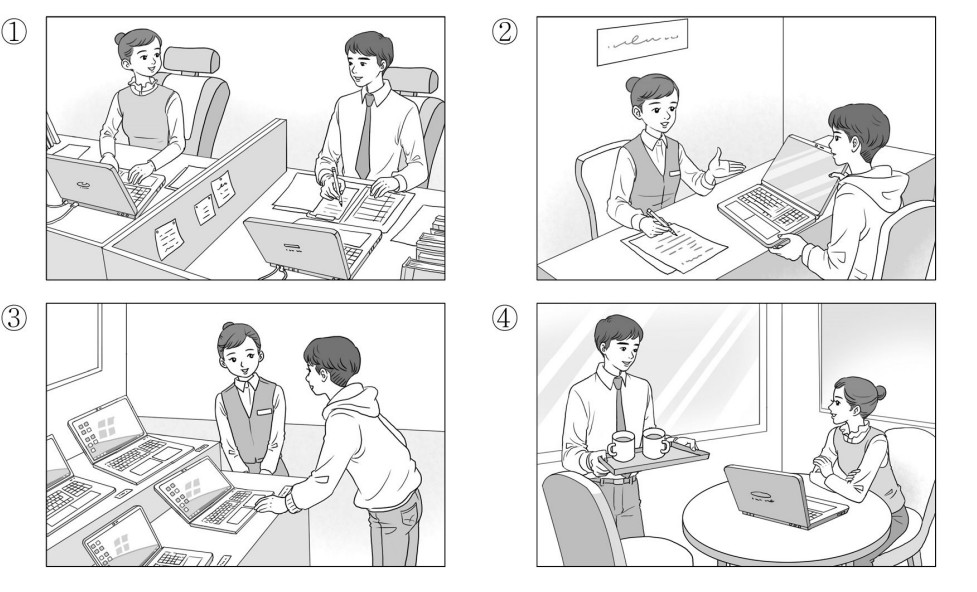
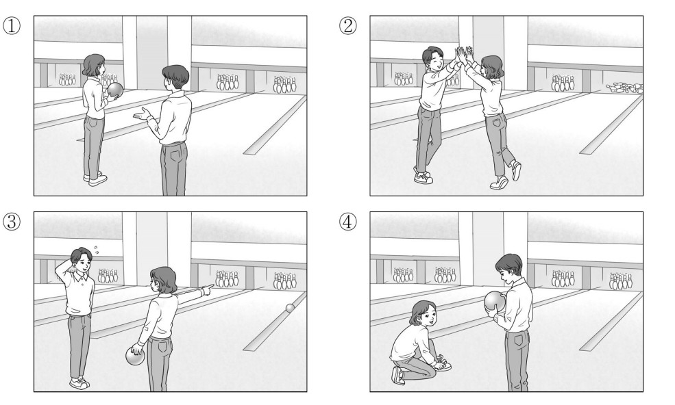
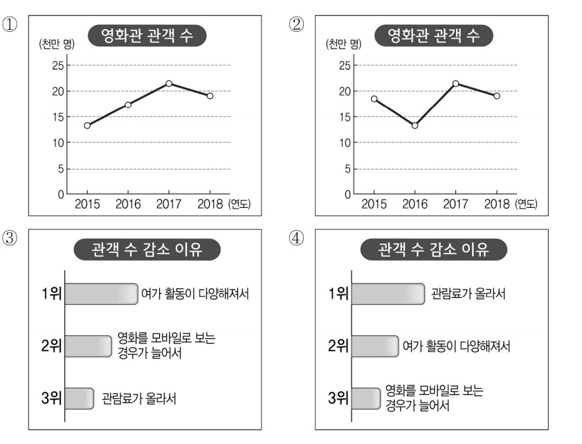

👨 남자: 노트북 화면이 안 나와서요.
👩 여자: 네, 언제 구입하셨지요?
👨 Nam: Màn hình máy tính xách tay của tôi không thể hiển thị được.
👩 Nữ: Vâng, xin hỏi ngài đã mua sản phẩm này vào thời điểm nào ạ?
🎯 Phân tích đáp án
Tại sao chọn ②? Bối cảnh hội thoại được xác định diễn ra tại một trung tâm bảo hành hoặc quầy chăm sóc khách hàng. Người nam mang theo một chiếc máy tính xách tay bị lỗi màn hình (노트북 화면이 안 나와서요) đến để yêu cầu hỗ trợ. Nhân viên nữ đang tiếp nhận thông tin và hỏi về thời gian mua hàng. Hình số 2 miêu tả chính xác tình huống: Khách hàng nam đang đặt chiếc máy tính xách tay lên bàn và trao đổi với nhân viên nữ tại quầy dịch vụ.
- Hình 1 sai vì mô tả cảnh hai người (có thể là đồng nghiệp) đang cùng làm việc và sử dụng laptop tại một văn phòng làm việc chung.
- Hình 3 sai vì mô tả cảnh người nam và người nữ đang xem xét các mẫu máy tính xách tay được trưng bày tại khu vực bán hàng.
- Hình 4 sai vì mô tả cảnh người nam đang bưng khay đồ uống phục vụ cho người nữ đang ngồi sử dụng laptop tại một khu vực nghỉ ngơi hoặc quán cà phê.

👩 여자: 이렇게? 그다음에는 어떻게 해?
👨 남자: 천천히 걸어가면서 공을 굴려 봐.
👩 Nữ: Tư thế như thế này đã đúng chưa? Bước tiếp theo em phải làm như thế nào nữa?
👨 Nam: Em hãy bước đi thật chậm rãi, đồng thời tiến hành lăn quả bóng về phía trước xem sao.
🎯 Phân tích đáp án
Tại sao chọn ①? Đoạn hội thoại miêu tả quá trình hướng dẫn kỹ thuật chơi bowling. Người nam đóng vai trò là người hướng dẫn, đưa ra các chỉ thị về tư thế cầm bóng (공을 잘 들고) và kỹ thuật lăn bóng (공을 굴려 봐). Người nữ đang cầm bóng và tiếp thu các chỉ dẫn (이렇게?). Bức tranh số 1 phác họa chính xác bối cảnh: Người nữ đang đứng ôm quả bóng bowling chờ chỉ thị, trong khi người nam đứng bên cạnh dùng cử chỉ tay để diễn giải và hướng dẫn kỹ thuật.
- Hình 2 sai vì mô tả cảnh hai người đang đập tay (High five) ăn mừng sau khi thực hiện xong một cú ném, không phù hợp với giai đoạn đang hướng dẫn tư thế.
- Hình 3 sai vì mô tả cảnh người nam đang tỏ ra thất vọng/gãi đầu, trong khi người nữ cầm bóng và chỉ tay về phía đường băng, không phản ánh sự tương tác hướng dẫn.
- Hình 4 sai vì mô tả cảnh người nữ đang quỳ gối buộc dây giày, trong khi người nam đứng cầm quả bóng chờ đợi.

🎯 Phân tích đáp án
Tại sao chọn ③? Biểu đồ chính xác cần phải thỏa mãn tiêu chí sắp xếp các lý do gây sụt giảm lượng khán giả dựa trên dữ kiện của bản tin:
- Vị trí dẫn đầu (가장 많았고): '여가 활동이 다양해져서' (Hoạt động giải trí đa dạng hơn).
- Tiếp nối theo sau (그 뒤를 이었습니다): Hạng 2 là '영화를 모바일로 보는 경우가 늘어서' (Xem phim qua thiết bị di động tăng) và Hạng 3 là '관람료가 올라서' (Giá vé tăng cao).
Biểu đồ thanh ngang ở Hình số 3 thể hiện chính xác tuyệt đối trật tự xếp hạng nguyên nhân này: 1위 여가 활동이 다양해져서 / 2위 영화를 모바일로 보는 경우가 늘어서 / 3위 관람료가 올라서.
- Hình 1 & 2 sai vì đây là biểu đồ đường thể hiện "Số lượng khán giả rạp chiếu phim". Bản tin nêu rõ tình trạng "liên tục suy giảm" (계속해서 감소하고 있습니다) kể từ năm 2015. Tuy nhiên, cả hai biểu đồ đường đều có xu hướng tăng lên ở giai đoạn 2016-2017, vi phạm dữ kiện suy giảm liên tục.
- Hình 4 sai vì biểu đồ thanh ngang này xếp hạng nguyên nhân "관람료가 올라서" (Giá vé tăng cao) lên vị trí số 1, đi ngược hoàn toàn với số liệu báo cáo của bản tin.
👨 남자: 왜요? 무슨 일이 있어요?
👩 여자: _____________________________
👨 Nam: Tại sao vậy? Cô đang có việc gì bận sao?
👩 Nữ: ( Do có người bạn từ dưới quê lên thăm tôi. )
- ① Xin vui lòng đi đến địa điểm tổ chức họp mặt.
- ② Ngày mai tôi hoàn toàn có thể tham gia được.
- ③ Do có người bạn từ dưới quê lên thăm tôi.
- ④ Tôi đã rất lo lắng vì e rằng chúng ta sẽ không thể gặp nhau.
🎯 Phân tích đáp án
Tại sao chọn ③? Người nữ thông báo về việc vắng mặt, và người nam lập tức đưa ra câu hỏi truy vấn về nguyên nhân: "왜요? 무슨 일이 있어요?" (Tại sao vậy? Có chuyện gì sao?). Để phản hồi chính xác, người nữ bắt buộc phải cung cấp một lý do chính đáng giải thích cho sự vắng mặt của mình. Câu trả lời "고향에서 친구가 와서요" (Vì có người bạn từ quê lên thăm tôi) cung cấp một nguyên nhân hoàn toàn hợp lý và đáp ứng trọn vẹn chức năng giao tiếp.
- ① Sai vì người nữ đã thông báo KHÔNG THỂ THAM GIA, việc cô ấy đưa ra lời đề nghị "Hãy đến địa điểm họp mặt đi" đối với người nam là hoàn toàn phi logic.
- ② Sai vì người nữ vừa mới khẳng định "못 갈 것 같아요" (Có lẽ không thể đi được). Việc lật ngược lại khẳng định "Ngày mai có thể đi được" (내일은 갈 수 있어요) là sự mâu thuẫn tự vả mặt.
- ④ Sai vì người nam đang chờ đợi một LÝ DO CỤ THỂ. Câu cảm thán bộc lộ cảm xúc lo lắng không giải quyết được vấn đề cung cấp thông tin nguyên nhân vắng mặt.
👩 여자: 지금 이 시간에도 문을 연 약국이 있을까?
👨 남자: _____________________________
👩 Nữ: Vào thời điểm muộn màng như giờ này liệu có còn hiệu thuốc nào mở cửa hoạt động không nhỉ?
👨 Nam: ( Ừ có chứ, có hiệu thuốc hoạt động đến tận đêm khuya đấy. )
- ① Không đâu, cơn đau đầu của anh đã thuyên giảm rồi.
- ② Ừ, để tôi chạy đi mua thuốc mang về cho.
- ③ Không đâu, họ đã đóng cửa không hoạt động rồi.
- ④ Ừ có chứ, có hiệu thuốc hoạt động đến tận đêm khuya đấy.
🎯 Phân tích đáp án
Tại sao chọn ④? Người nữ đặt ra một câu hỏi nghi vấn về sự tồn tại của các hiệu thuốc đang mở cửa: "문을 연 약국이 있을까?" (Liệu có hiệu thuốc nào mở cửa không?). Để phản hồi, người nam cần phải xác nhận sự tồn tại đó (có hay không). Lời đáp "응, 늦게까지 하는 약국이 있어" (Ừ có chứ, có hiệu thuốc hoạt động đến tận khuya đấy) vừa đưa ra sự khẳng định "Có", vừa cung cấp thêm thông tin giải tỏa sự lo lắng về mặt thời gian của người nữ.
- ① Sai vì người nam LÀ NGƯỜI ĐANG BỊ ĐAU ĐẦU VÀ MUỐN ĐI MUA THUỐC (머리가 계속 아프네). Việc phủ nhận "Đầu đã khỏi đau rồi" sẽ phá vỡ logic dẫn đến hành động đi mua thuốc.
- ② Sai vì người nam LÀ NGƯỜI SẼ TỰ ĐI MUA (약 좀 사 가지고 올게), việc anh ta nói "Ừ, để TÔI đi mua CHO" (내가 약을 사다 줄게) đối với người nữ là sai lệch vai vế người bệnh.
- ③ Sai vì nếu người nam biết trước các hiệu thuốc đã "không mở cửa" (문을 안 열었더라고), anh ta sẽ không chủ động khởi xướng việc "Anh sẽ đi mua thuốc" ở câu đầu tiên.
👨 남자: 아직 관리실에 얘기를 못 해서 잘 모르겠어.
👩 여자: _____________________________
👨 Nam: Tớ vẫn chưa trình bày báo cáo với phòng quản lý nên tớ cũng không nắm rõ nữa.
👩 Nữ: ( Nếu vậy thì để tớ đi hỏi phòng quản lý xem sao nhé. )
- ① Vậy thì chúng ta gặp nhau vào thứ Bảy nhé.
- ② Nếu vậy thì để tớ tự đi hỏi xem sao nhé.
- ③ Để đến phòng tập, cậu chỉ cần di chuyển lên tầng 3 là được.
- ④ Tớ đã tưởng rằng chúng ta không có lịch tập vào dịp cuối tuần.
🎯 Phân tích đáp án
Tại sao chọn ②? Người nữ đưa ra câu hỏi về tình trạng khả dụng của phòng tập. Người nam phản hồi rằng bản thân thiếu thông tin do chưa hỏi phòng quản lý (관리실에 얘기를 못 해서). Đứng trước sự bế tắc thông tin này, phản ứng chủ động và mang tính giải quyết vấn đề nhất từ phía người nữ là nhận trách nhiệm đi thu thập thông tin. Lời đề nghị "그럼 내가 가서 물어볼게" (Nếu vậy thì để tớ đi hỏi xem sao) là một sự tiếp nối vô cùng tự nhiên và hợp lý.
- ① Sai vì vấn đề địa điểm tập luyện VẪN CHƯA ĐƯỢC XÁC NHẬN. Việc tùy tiện chốt lịch "Thứ Bảy gặp nhé" khi chưa có phòng là hành vi vội vàng thiếu logic.
- ③ Sai vì vị trí tầng 3 ĐÃ ĐƯỢC CHÍNH NGƯỜI NỮ ĐỀ CẬP Ở CÂU HỎI ĐẦU TIÊN (3층 연습실), việc cô ấy tự hướng dẫn lại vị trí cho bản thân hoặc cho người nam là thừa thãi.
- ④ Sai vì người nữ là người CHỦ ĐỘNG HỎI PHÒNG TẬP CHO NGÀY THỨ BẢY (토요일에... 사용할 수 있어?), minh chứng việc cô ấy biết rõ có lịch tập. Phủ nhận "Tưởng rằng cuối tuần không tập" là mâu thuẫn với câu hỏi ban đầu.
👩 여자: 맞아요. 먼지도 심하고요.
👨 남자: _____________________________
👩 Nữ: Đúng vậy. Lượng bụi bặm phát tán ra cũng vô cùng nghiêm trọng nữa.
👨 Nam: ( Thật mong sao quá trình thi công nhanh chóng kết thúc. )
- ① Nếu tiến hành thi công thì không gian có lẽ sẽ trở nên sạch sẽ hơn đấy.
- ② Nghe thông báo rằng công trình thi công sẽ chính thức khởi công vào ngày mai.
- ③ Vì đang tiến hành thi công nên chắc chắn sẽ phát sinh nhiều tiếng ồn đấy.
- ④ Thật mong sao quá trình thi công nhanh chóng đi đến hồi kết thúc.
🎯 Phân tích đáp án
Tại sao chọn ④? Cả hai nhân vật đều đang bày tỏ sự khó chịu và phàn nàn về những hệ lụy tiêu cực phát sinh từ công trình thi công (tiếng ồn, bụi bặm). Đứng trước một tình huống gây phiền toái đang tiếp diễn, mong muốn tự nhiên và hợp lý nhất của con người là hy vọng sự việc đó mau chóng chấm dứt. Câu cảm thán "공사가 빨리 끝났으면 좋겠어요" (Thật mong sao quá trình thi công nhanh chóng kết thúc) phản ánh trọn vẹn tâm lý khao khát thoát khỏi sự phiền toái này.
- ① Sai vì hiện trạng được miêu tả là BỤI BẶM NGHIÊM TRỌNG (먼지도 심하고요). Việc nhận định thi công sẽ mang lại "sự sạch sẽ" (깨끗해지겠어요) là hoàn toàn sai lệch thực tế.
- ② Sai vì tiếng ồn và bụi bặm đang HIỆN HỮU GÂY ẢNH HƯỞNG ĐẾN CÔNG VIỆC, chứng minh công trình ĐÃ BẮT ĐẦU VÀ ĐANG THI CÔNG. Không thể đưa ra thông báo "ngày mai mới bắt đầu" (내일부터 시작한대요).
- ③ Sai vì tiếng ồn ĐÃ VÀ ĐANG XẢY RA (집중이 안 되네요), không cần phải đưa ra một lời "dự đoán về tương lai" (시끄러울 거예요) dư thừa như vậy.
👨 남자: 재미있다는 의견이 많았습니다. 그런데 음악이 장면에 안 어울린다는 의견도 있었습니다.
👩 여자: _____________________________
👨 Nam: Có rất nhiều ý kiến khen ngợi đánh giá nội dung thú vị. Tuy nhiên, song song với đó cũng tồn tại các phản hồi cho rằng phần âm nhạc lồng ghép không thực sự ăn nhập với các phân cảnh.
👩 Nữ: ( Có lẽ chúng ta cần phải đầu tư lưu tâm hơn nữa đến khâu âm nhạc rồi. )
- ① Tôi thực sự rất mong đợi và háo hức chờ đón buổi phát sóng đầu tiên.
- ② Tôi vẫn chưa có cơ hội được tiếp nhận các ý kiến phản hồi từ phía khán giả.
- ③ Họ đã đưa ra những lời khen ngợi rằng các phân cảnh hình ảnh vô cùng đẹp mắt.
- ④ Có lẽ chúng ta cần phải đầu tư lưu tâm hơn nữa đến khâu âm nhạc rồi.
🎯 Phân tích đáp án
Tại sao chọn ④? Người nam đưa ra báo cáo tổng hợp về ý kiến khán giả, trong đó đặc biệt nhấn mạnh một điểm trừ cần khắc phục: "음악이 장면에 안 어울린다는 의견" (Ý kiến cho rằng âm nhạc không phù hợp với phân cảnh). Đứng trước một lỗ hổng kỹ thuật đã được phản ánh, thái độ chuyên nghiệp của người làm chương trình là phải tiếp thu và đưa ra hướng cải thiện. Phản hồi "음악에 더 신경을 써야겠네요" (Có lẽ chúng ta cần lưu tâm hơn đến khâu âm nhạc) thể hiện sự tiếp thu phản biện và định hướng khắc phục hoàn toàn chuẩn xác.
- ① Sai vì buổi phát sóng đầu tiên ĐÃ ĐƯỢC CHIẾU XONG XUÔI RỒI (첫 방송에 대한 의견은), khán giả mới có thể gửi phản hồi. Việc bộc lộ cảm xúc "mong đợi chờ đón buổi chiếu" là sai tiến độ thời gian.
- ② Sai vì người nữ chính là người ĐẶT CÂU HỎI YÊU CẦU NGƯỜI NAM BÁO CÁO Ý KIẾN KHÁN GIẢ. Sau khi người nam đã báo cáo xong, cô ấy nói "Chưa nghe ý kiến" là tự phủ nhận cuộc hội thoại.
- ③ Sai vì người nam báo cáo điểm trừ là "Âm nhạc không ăn nhập với phân cảnh", không hề đề cập đến việc "Khán giả khen phân cảnh đẹp" (장면들이 아름다웠다).
👨 남자: 케이크는 민수가 사 온다고 했어.
👩 여자: 그럼 난 생일 카드 좀 쓰고 있어야겠다.
👨 남자: 그래. 난 민수 어디쯤 왔는지 전화해 볼게.
👨 Nam: Min-su đã nhận trách nhiệm sẽ mua bánh kem mang đến rồi.
👩 Nữ: Nếu vậy thì tôi phải tranh thủ ngồi viết thiệp chúc mừng sinh nhật mới được.
👨 Nam: Được thôi. Tôi sẽ gọi điện thoại kiểm tra xem Min-su đã di chuyển đến đâu rồi.
- ① Thực hiện thao tác mang hoa đến.
- ② Tiến hành lựa chọn quà tặng.
- ③ Thực hiện thao tác viết thiệp chúc mừng sinh nhật.
- ④ Tiến hành gọi điện thoại cho Min-su.
🎯 Phân tích đáp án
Tại sao chọn ③? Yêu cầu của câu hỏi là xác định "Hành động TIẾP THEO của người nữ". Ở câu thoại của mình, người nữ đã đưa ra tuyên bố rõ ràng về công việc dự định thực hiện: "그럼 난 생일 카드 좀 쓰고 있어야겠다" (Vậy thì tôi sẽ ngồi viết thiệp sinh nhật). Do đó, hành động ngay lập tức tiếp theo mà cô sẽ thực thi là Viết thiệp sinh nhật (생일 카드를 쓴다). Đáp án ③ là sự lựa chọn chính xác tuyệt đối.
- ① Sai vì người nữ đã khẳng định ngay từ đầu: "꽃도 준비했고" (Hoa CŨNG ĐÃ CHUẨN BỊ XONG). Nhiệm vụ này đã được hoàn tất trước đó.
- ② Sai vì việc chuẩn bị quà tặng cũng ĐÃ HOÀN TẤT (선물도 샀고).
- ④ Sai vì nhiệm vụ gọi điện thoại để kiểm tra vị trí của Min-su (전화해 볼게) đã được NGƯỜI NAM chủ động nhận lãnh.
👨 남자: 네, 예약 확인되셨고요. 검사 전에 옷을 갈아입으셔야 해요.
👩 여자: 그래요? 어디로 가면 되지요?
👨 남자: 오른쪽으로 가시면 탈의실이 있습니다.
👨 Nam: Vâng, hệ thống đã xác nhận lịch hẹn của chị. Trước khi tiến hành kiểm tra y tế, chị cần phải thay trang phục chuyên dụng ạ.
👩 Nữ: Vậy sao? Tôi phải di chuyển theo hướng nào ạ?
👨 Nam: Chị vui lòng di chuyển sang phía bên phải, phòng thay đồ được bố trí ở đó ạ.
- ① Tiến hành thiết lập lịch đặt trước để kiểm tra.
- ② Di chuyển đi thay trang phục chuyên dụng.
- ③ Tiến hành xác nhận lại thời gian khám bệnh.
- ④ Đặt câu hỏi để tìm hiểu vị trí của phòng thay đồ.
🎯 Phân tích đáp án
Tại sao chọn ②? Yêu cầu tìm "Hành động TIẾP THEO của người nữ". Nhân viên y tế (người nam) yêu cầu cô phải thay trang phục trước khi khám (옷을 갈아입으셔야 해요). Người nữ đã chủ động hỏi đường đi đến phòng thay đồ (어디로 가면 되지요?) và được hướng dẫn chi tiết "Đi sang bên phải". Hành động logic bắt buộc tiếp theo mà cô phải thực hiện là di chuyển theo hướng dẫn để Đi thay trang phục (옷을 갈아입으러 간다). Đáp án ② hoàn toàn tuân thủ trình tự sự kiện.
- ① Sai vì người nữ ĐÃ ĐẶT LỊCH HẸN THÀNH CÔNG TỪ TRƯỚC RỒI (진료 예약했는데요) và nhân viên cũng đã xác nhận (예약 확인되셨고요).
- ③ Sai vì thời gian khám bệnh đã được người nữ chủ động khai báo rõ ràng là "2 GIỜ HÔM NAY" (오늘 두 시에), không cần thiết phải "xác nhận lại" (확인한다).
- ④ Sai vì hành động "hỏi vị trí phòng thay đồ" (어디로 가면 되지요) đã được người nữ THỰC HIỆN XONG NGAY TRONG LỜI THOẠI TRƯỚC ĐÓ, và đã nhận được câu trả lời. Hành động tiếp theo phải là hành động vật lý di chuyển đi thay đồ.
👩 여자: 토마토 심는 게 생각보다 간단하다.
👨 남자: 그렇지? 이제 화분을 베란다로 옮겨 놓을 테니까 네가 물을 좀 줘.
👩 여자: 응, 알겠어.
👩 Nữ: Hóa ra việc trồng cà chua lại đơn giản hơn tớ nghĩ đấy.
👨 Nam: Đúng không? Bây giờ tớ sẽ tiến hành chuyển chậu cây ra ngoài ban công, cậu tưới cho nó chút nước nhé.
👩 Nữ: Ừ, tớ biết rồi.
- ① Tiến hành tưới nước cho chậu cây.
- ② Dán nhãn ngày tháng lên chậu cây.
- ③ Tiến hành gieo trồng cà chua vào chậu.
- ④ Di chuyển chậu cây ra khu vực ban công.
🎯 Phân tích đáp án
Tại sao chọn ①? Yêu cầu của câu hỏi là xác định "Hành động TIẾP THEO của người nữ". Người nam đã đưa ra một yêu cầu công việc cụ thể: "네가 물을 좀 줘" (Cậu tưới cho nó chút nước nhé). Người nữ ngay lập tức tiếp nhận yêu cầu: "응, 알겠어" (Ừ, tớ hiểu rồi). Do đó, hành động ngay lập tức tiếp theo mà người nữ bắt buộc phải thực thi là Tưới nước cho chậu cây (화분에 물을 준다). Đáp án ① là sự lựa chọn duy nhất đúng.
- ② và ③ Sai vì các công đoạn "Trồng cà chua" và "Dán nhãn ngày tháng" ĐÃ ĐƯỢC HOÀN TẤT TRƯỚC ĐÓ (심은 날짜까지 붙였으니까 이제 다 끝났어).
- ④ Sai vì việc khiêng chậu cây nặng ra ban công (베란다로 옮겨 놓을 테니까) là công việc do NGƯỜI NAM chủ động đảm nhận.
👩 여자: 아직 특강해 주실 분을 못 구했는데요. 오늘 박민석 선생님께 연락 드려 보려고요.
👨 남자: 그럼 좀 서둘러 주세요. 안 되면 다른 분을 찾아봐야 하니까요.
👩 여자: 네, 바로 알아보겠습니다.
👩 Nữ: Chúng tôi vẫn chưa tìm được người phụ trách bài giảng chuyên đề đặc biệt ạ. Hôm nay tôi dự định sẽ liên lạc thử với thầy Park Min-seok.
👨 Nam: Vậy cô hãy khẩn trương đẩy nhanh tiến độ lên một chút. Bởi vì nếu thầy ấy không đồng ý thì chúng ta còn phải tìm phương án thay thế khác nữa.
👩 Nữ: Vâng, tôi sẽ tiến hành liên lạc ngay đây ạ.
- ① Tiến hành tìm kiếm một giảng viên khác để thay thế.
- ② Thực hiện cuộc gọi liên lạc cho thầy Park.
- ③ Sắp xếp và tổng hợp các tài liệu cho bài giảng chuyên đề đặc biệt.
- ④ Tìm hiểu thông tin về chương trình bồi dưỡng nhân viên.
🎯 Phân tích đáp án
Tại sao chọn ②? Người nữ đưa ra đề xuất giải quyết vấn đề thiếu giảng viên: "오늘 박민석 선생님께 연락 드려 보려고요" (Hôm nay tôi định liên lạc với thầy Park Min-seok). Đứng trước sự thúc giục của cấp trên, cô đã chốt lại bằng lời cam kết: "네, 바로 알아보겠습니다" (Vâng, tôi sẽ liên lạc ngay đây). Hành động thiết thực tiếp theo mà cô bắt buộc phải làm là nhấc máy lên để Liên lạc với thầy Park (박 선생님에게 연락한다). Đáp án ② phản ánh hoàn toàn chính xác logic công việc này.
- ① Sai vì việc "tìm giảng viên khác" (다른 분을 찾아봐야) là phương án dự phòng CHỈ XẢY RA SAU KHI THẦY PARK ĐÃ TỪ CHỐI (안 되면). Trước mắt cô phải gọi cho thầy Park đã.
- ③ Sai vì ngay cả GIẢNG VIÊN ĐỨNG LỚP CÒN CHƯA MỜI ĐƯỢC, thì việc chuẩn bị tài liệu (자료를 정리한다) cho bài giảng đó là phi thực tế.
- ④ Sai vì người nữ chính là NGƯỜI CHỊU TRÁCH NHIỆM LÊN KẾ HOẠCH (확정됐나요?) cho chương trình bồi dưỡng, cô ấy đã nắm rõ chương trình, không cần phải đi "tìm hiểu về chương trình" (알아본다) nữa.
👨 남자: 응. 진짜 좋았어. 너도 그 수업 들으려고?
👩 여자: 수강 신청은 했는데 다른 학과 수업이라 걱정이 돼서.
👨 남자: 그 수업, 내용도 재밌고 어렵지 않아서 괜찮을 거야.
👨 Nam: Ừ. Cực kỳ tuyệt vời luôn. Cậu cũng có dự định đăng ký học môn đó à?
👩 Nữ: Tớ đã hoàn tất thao tác đăng ký môn học rồi, nhưng vì đây là môn thuộc chuyên ngành của khoa khác nên tớ cảm thấy hơi lo lắng.
👨 Nam: Cậu cứ yên tâm đi, nội dung môn đó cũng khá thú vị và không hề đánh đố sinh viên đâu.
- ① Người nữ là sinh viên trực thuộc Khoa Tâm lý học.
- ② Người nữ đã gặp trục trặc và không thể đăng ký được môn học.
- ③ Người nam đã vô cùng hài lòng với chất lượng của môn Đại cương Tâm lý học.
- ④ Người nam đã cùng tham gia học môn Đại cương Tâm lý học với người nữ.
🎯 Phân tích đáp án
Tại sao chọn ③? Khi người nữ đặt câu hỏi về trải nghiệm học tập môn Đại cương Tâm lý học vào năm ngoái, người nam đã lập tức phản hồi bằng một sự đánh giá rất tích cực: "응. 진짜 좋았어" (Ừ. Cực kỳ tuyệt vời luôn), đồng thời còn đưa ra thêm lời trấn an "내용도 재밌고 어렵지 않아서" (Nội dung thú vị và không khó). Những lời khen ngợi này chứng tỏ anh ấy đã có một trải nghiệm học tập cực kỳ tốt đẹp. Nhận định "Người nam đã hài lòng với môn Đại cương Tâm lý học (남자는 심리학 개론 수업에 만족했다)" là sự thấu hiểu chính xác biểu cảm này.
- ① Sai vì người nữ bày tỏ sự e ngại: "다른 학과 수업이라 걱정이 돼서" (Vì là MÔN CỦA KHOA KHÁC nên tớ lo). Câu nói này xác nhận cô ấy KHÔNG PHẢI là sinh viên chuyên ngành Khoa Tâm lý học.
- ② Sai vì người nữ đã khẳng định: "수강 신청은 했는데" (Tớ ĐÃ ĐĂNG KÝ XONG RỒI). Đáp án ② phủ định sự thật này.
- ④ Sai vì người nam ĐÃ HỌC XONG VÀO NĂM NGOÁI (작년에 들었지?), trong khi người nữ BÂY GIỜ MỚI ĐĂNG KÝ HỌC (너도 그 수업 들으려고?). Do đó, hai người học lệch thời điểm, không có chuyện "đã học cùng nhau" (여자와 수업을 들었다).
- ① Cuộc thi ca hát (Karaoke) sẽ được diễn ra vào khung giờ buổi chiều.
- ② Sự kiện Lễ hội Giao lưu sẽ chính thức bắt đầu vào buổi tối.
- ③ Hoạt động khu chợ đêm được tổ chức lần đầu tiên vào năm nay.
- ④ Bể bơi mini đã được lắp đặt ngay bên trong khuôn viên của sân chơi.
🎯 Phân tích đáp án
Tại sao chọn ①? Loa phát thanh công bố cực kỳ rõ ràng về thời điểm khai mạc sự kiện: "오후 세 시, 노래자랑 대회를 시작으로..." (Mở màn bằng cuộc thi ca hát vào lúc 3 GIỜ CHIỀU...). Thông tin này chứng minh sự thật rằng: "Cuộc thi ca hát sẽ được tổ chức vào buổi chiều (노래자랑 대회는 오후에 한다)". Đáp án ① là sự đối chiếu thời gian hoàn toàn chính xác.
- ② Sai vì Lễ hội Giao lưu được bắt đầu bằng Cuộc thi hát vào lúc 3 GIỜ CHIỀU (오후 세 시). Việc nhận định lễ hội "Bắt đầu vào buổi tối" (저녁에 시작한다) là sai lệch về mốc thời gian.
- ③ Sai vì loa thông báo dùng cụm từ "작년에 이어 올해도 야시장이 열립니다" (TIẾP NỐI NĂM NGOÁI, NĂM NAY CŨNG...). Điều này chứng minh khu chợ đêm đã từng được tổ chức trong quá khứ, không phải là "lần đầu tiên tổ chức vào năm nay" (올해 처음으로).
- ④ CẨN THẬN BẪY TỪ VỰNG: Bể bơi mini được quy hoạch lắp đặt ở BÊN CẠNH SÂN CHƠI (놀이터 옆에). Việc đáp án ④ xuyên tạc thành lắp đặt "BÊN TRONG sân chơi" (놀이터 안에) là sai vị trí địa lý.
- ① Chuyến tàu này hiện tại vẫn đang được vận hành phục vụ hành khách bình thường.
- ② Chuyến tàu này đã gặp trục trặc và không thể tiến vào khu vực bên trong ga Inju.
- ③ Chuyến tàu này cũng đã từng trải qua một sự cố mất điện tương tự vào tuần trước.
- ④ Sự cố mất điện của chuyến tàu này được ghi nhận phát sinh vào khung giờ đêm muộn.
🎯 Phân tích đáp án
Tại sao chọn ③? Bản tin thời sự đã cung cấp thông tin tiểu sử về lịch sử bảo trì của chuyến tàu: "이 열차는 지난주에도 정전 사고가 한 차례 있었는데요" (Chuyến tàu này cũng đã có MỘT LẦN bị sự cố mất điện VÀO TUẦN TRƯỚC). Dữ kiện lịch sử này hoàn toàn trùng khớp với nội dung được đưa ra ở đáp án ③: "이 열차는 지난주에도 정전 사고가 있었다" (Chuyến tàu này tuần trước cũng từng bị mất điện).
- ① Sai vì loa thông báo kết luận hiện trạng: "현재 운행을 중단하고 정밀 검사를 하고 있습니다" (Hiện tại ĐANG ĐÌNH CHỈ VẬN HÀNH để kiểm tra kỹ thuật). Việc đáp án bảo nó "Đang vận hành" (운행 중이다) là sai lệnh ban quản lý.
- ② Sai vì sự kiện mất điện được xác định không gian là XẢY RA TẠI NGAY BÊN TRONG GA INJU (인주역에서... 사고가 발생했습니다). Khẳng định "không thể tiến vào ga" (들어오지 못했다) là sai địa điểm.
- ④ Sai vì mốc thời gian xảy ra vụ việc là vào giờ cao điểm 8 GIỜ SÁNG NAY (오늘 오전 8시경) khiến người dân trễ giờ đi làm. Đáp án ④ lấp liếm thành "đêm muộn" (늦은 밤) là sai lệch sự thật trầm trọng.
👨 남자: 병든 나무의 증상을 살피고, 땅의 상태나 주변 나무들도 조사해요. 나무도 다른 식물들처럼 주변 환경에 민감하기 때문이죠. 병이 생긴 원인에 따라 주변 환경을 개선하거나 직접 나무에 약을 처방합니다.
👨 Nam: Quá trình bắt đầu bằng việc quan sát các triệu chứng bệnh lý của cây, đồng thời chúng tôi cũng bắt buộc phải khảo sát tình trạng chất lượng đất đai cũng như hiện trạng sinh trưởng của những cây cối xung quanh. Lý do là bởi cây cối cũng giống như bất kỳ loài thực vật nào khác, chúng sở hữu độ nhạy cảm rất cao với môi trường xung quanh. Tùy thuộc vào nguyên nhân cốt lõi gây ra bệnh, chúng tôi sẽ đưa ra phác đồ điều trị, có thể là tiến hành cải tạo lại môi trường sống xung quanh hoặc kê đơn thuốc tiêm trực tiếp vào thân cây.
- ① Theo quy định, người ta tuyệt đối không được phép kê đơn thuốc và truyền trực tiếp vào cơ thể của cây bị bệnh.
- ② Chuyên gia nam chỉ mới chập chững bước vào nghề điều trị cho cây cối cách đây không lâu.
- ③ Để phục vụ cho công tác điều trị, người nam tiến hành khảo sát và đánh giá tình trạng của lớp đất đai.
- ④ Nếu đem lên bàn cân so sánh với các loài thực vật khác, thì cây cối là loài ít chịu sự tác động chi phối của môi trường hơn cả.
🎯 Phân tích đáp án
Tại sao chọn ③? Bác sĩ chuyên khoa cây trồng (Người nam) đã mô tả rất rõ ràng về quy trình chẩn đoán bệnh của mình: "병든 나무의 증상을 살피고, 땅의 상태나 주변 나무들도 조사해요" (Quan sát triệu chứng của cây, và KHẢO SÁT CẢ TÌNH TRẠNG CỦA ĐẤT ĐAI hay cây cối xung quanh). Việc phân tích chất lượng đất đai là một bước đi bắt buộc để tìm ra nguyên nhân bệnh. Dữ kiện này chứng thực tính chính xác của đáp án ③: "남자는 나무 치료를 위해 땅의 상태를 조사한다 (Nam khảo sát tình trạng đất đai để trị bệnh cho cây)".
- ① CẨN THẬN BẪY LẬT NGƯỢC: Chuyên gia khẳng định ở câu chốt: "직접 나무에 약을 처방합니다" (Có thể KÊ ĐƠN THUỐC TRỰC TIẾP VÀO CÂY). Đáp án ① lừa đảo bằng từ "Không" (처방하지 않는다).
- ② Sai vì nữ phóng viên đã sử dụng cụm từ tri ân ngay đầu buổi phỏng vấn: "오랫동안 나무를 치료해 오셨는데요" (Ông đã làm nghề trị bệnh cho cây TỪ RẤT LÂU RỒI). Chuyên gia là một lão làng trong nghề, không phải là ma mới "mới làm cách đây không lâu" (시작한 지 얼마 안 됐다).
- ④ Sai vì đặc tính sinh học của cây được khẳng định rõ: "나무도 다른 식물들처럼 주변 환경에 민감하기 때문이죠" (Bởi vì cây cối cũng nhạy cảm với môi trường Y HỆT NHƯ CÁC LOÀI THỰC VẬT KHÁC). Việc đáp án ④ phán "Cây cối ít chịu ảnh hưởng của môi trường hơn" (환경의 영향을 덜 받는다) là sai kiến thức khoa học được đưa ra trong bài.
👩 여자: 요즘은 인터넷 요가 영상도 많이 있던데, 그걸 보는 건 어때?
👨 남자: 영상만으로는 안 될 것 같아. 내 동작이 틀려도 알 수 없잖아.
👩 Nữ: Dạo gần đây trên mạng Internet mọc lên nhan nhản các video hướng dẫn tập yoga miễn phí mà, thay vì tốn tiền thì cậu mở video lên xem và làm theo thì sao?
👨 Nam: Nếu chỉ đơn thuần nhìn vào màn hình video để bắt chước thì tớ nghĩ là không ổn đâu. Lỡ như tư thế tập của tớ bị sai kỹ thuật thì cũng làm gì có chuyên gia nào ở đó để bẻ lại và sửa lỗi cho tớ biết được.
- ① Muốn được tiếp nhận sự đào tạo bài bản và học tập thể dục một cách chuẩn xác nhất.
- ② Các nguồn thông tin và video hướng dẫn thể dục trên mạng Internet mang lại lợi ích hỗ trợ vô cùng to lớn.
- ③ Nhằm mục đích bảo vệ sức khỏe, chúng ta bắt buộc phải duy trì thói quen tập thể dục một cách đều đặn.
- ④ Cần thiết phải có sự chọn lọc và tìm kiếm những video hướng dẫn yoga đơn giản, dễ dàng bắt chước làm theo.
🎯 Phân tích đáp án
Tại sao chọn ①? Yêu cầu tìm "Suy nghĩ trọng tâm của người Nam". Xuyên suốt cuộc hội thoại, nỗi lo sợ lớn nhất của người nam là việc tập sai kỹ thuật dẫn đến không có hiệu quả (동작이 맞는지 모르겠고 효과도 없는 / 내 동작이 틀려도 알 수 없잖아). Để khắc phục nỗi sợ đó, anh kiên quyết từ chối phương pháp "học mót" qua video trên mạng, và chốt hạ phương án ĐI ĐẾN TRUNG TÂM YOGA ĐỂ HỌC (요가 학원에 다녀야겠어) nơi có giáo viên trực tiếp sửa lỗi. Mong muốn được đến trung tâm để giáo viên uốn nắn động tác chính là khát khao "Muốn được học thể dục một cách BÀI BẢN, CHUẨN XÁC (운동을 제대로 배워서 하고 싶다)". Đáp án ① là sự thấu hiểu tuyệt đối tâm lý của nhân vật này.
- ② Sai vì lập luận "Video trên mạng là một công cụ hữu ích đáng để học theo" là lời khuyên của NGƯỜI NỮ (인터넷 요가 영상도 많이 있던데, 그걸 보는 건 어때?). Người nam đang ra sức bác bỏ lời khuyên rẻ tiền này.
- ③ Sai vì đoạn hội thoại xoay quanh CHẤT LƯỢNG KỸ THUẬT (Tập ĐÚNG hay SAI), hoàn toàn không có câu chữ nào mang tính giáo điều kêu gọi rèn luyện "Tính kiên trì, đều đặn" (꾸준히 운동을 해야 한다) cả.
- ④ Sai vì người nam ĐÃ TẨY CHAY HOÀN TOÀN VIỆC HỌC QUA VIDEO (영상만으로는 안 될 것 같아). Do đó, việc đáp án ④ khuyên anh ta "Hãy ráng đi tìm mấy cái video dễ dễ mà tập theo" là một sự xúc phạm đối với quyết tâm muốn đi học bài bản của anh ta.
👩 여자: 난 어디든 상관없어. 그냥 여러 사람이 원하는 곳으로 해.
👨 남자: 모두가 만족할 수 있는 결정을 하려면 네 생각도 정확하게 말해 줘야 돼.
👩 Nữ: Đối với tớ thì đi đâu cũng được, không quan trọng lắm đâu. Cứ chốt phương án theo địa điểm mà số đông mọi người muốn đi là được rồi.
👨 Nam: Muốn đưa ra được một bản phác thảo quyết định làm hài lòng được tất cả mọi thành viên, thì bản thân cậu cũng phải trình bày suy nghĩ của mình ra một cách thật rõ ràng rành mạch chứ.
- ① Trong trường hợp phát sinh những xung đột mâu thuẫn, chúng ta cần phải lao vào giải quyết chúng một cách nhanh chóng nhất.
- ② Cậu tốt nhất là nên bày tỏ những suy nghĩ cá nhân của mình ra một cách thật rõ ràng và rành mạch.
- ③ Hành động tinh tế và tối ưu nhất là ưu tiên nhượng bộ thực hiện theo những mong muốn của đối phương trước.
- ④ Nếu muốn thấu cảm được lập trường của đối phương, thì sự hiện diện của các cuộc đối thoại là điều bắt buộc.
🎯 Phân tích đáp án
Tại sao chọn ②? "Suy nghĩ trọng tâm" của người nam được bộc lộ thông qua thái độ hối thúc của anh ta. Mở đầu, anh ta gắt gỏng: "너도 어디 가고 싶은지 말을 해" (Cậu phải MỞ MIỆNG RA NÓI XEM cậu muốn đi đâu chứ). Bất chấp thái độ ba phải "sao cũng được" của cô gái, anh ta tiếp tục chốt hạ quan điểm của mình một lần nữa: "네 생각도 정확하게 말해 줘야 돼" (Cậu phải NÓI RÕ SUY NGHĨ CỦA BẢN THÂN RA CHỨ). Mong muốn tột độ của anh ta là bắt cô gái phải thoát khỏi sự ba phải và dũng cảm nói lên quan điểm. Điều này khớp hoàn toàn với đáp án ②: "Mong muốn đối phương HÃY BÀY TỎ RÕ RÀNG SUY NGHĨ CỦA BẢN THÂN (자신의 생각을 분명하게 말하면 좋겠다)".
- ① Sai vì tình huống hiện tại chỉ là một buổi thảo luận chọn địa điểm đi chơi, nhóm người đang cố gắng thống nhất ý kiến chung, hoàn toàn CHƯA CÓ AI CHỬI NHAU HAY XẢY RA XUNG ĐỘT để mà phải đi "giải quyết mâu thuẫn/xung đột" (갈등이 생기면 해결).
- ③ CẨN THẬN BẪY CHỦ THỂ: Tư tưởng "Cứ làm theo ý thích của đối phương/số đông" (여러 사람이 원하는 곳으로 해 = 상대방이 원하는 것을 먼저) là lối tư duy ba phải, dễ dãi của NGƯỜI NỮ. Người nam kịch liệt phản đối lối sống không có chính kiến này.
- ④ Sai vì người nam không hề mang tư tưởng tâm lý học đi phân tích "tác dụng của đối thoại giúp thấu hiểu lập trường" (입장을 이해하려면 대화가 필요하다). Anh ta chỉ thực dụng yêu cầu cô gái: "Hãy nói ra ý kiến đi để tôi còn biết đường gom vào chốt sổ cho xong".
👨 남자: 그렇네요. 그림이 있는 것도 인상적이고요.
👩 여자: 그런데 명함이라고 하기에는 정보가 좀 부족한 것 같지 않아요?
👨 남자: 디자인 덕분에 이렇게 한 번 더 보게 되니까 전 좋은 것 같아요.
👨 Nam: Quả đúng là như vậy. Việc phá cách chèn thêm cả những hình vẽ minh họa vào mặt danh thiếp cũng để lại một dấu ấn thị giác vô cùng mạnh mẽ.
👩 Nữ: Đẹp thì đẹp thật đấy, thế nhưng để gánh vác vai trò của một tấm danh thiếp kinh doanh thì anh không cảm thấy là lượng thông tin mà nó cung cấp có hơi nghèo nàn và thiếu sót sao?
👨 Nam: Chính nhờ cái thiết kế phá cách đó mà nó mới thành công thu hút sự chú ý và khiến chúng ta phải chủ động lật ra nhìn lại nó thêm một lần nữa thế này, vì vậy cá nhân tôi đánh giá đây là một chiến lược thiết kế rất tuyệt vời.
- ① Tấm danh thiếp này thực sự rất tuyệt vời vì nó sở hữu một thiết kế vô cùng ấn tượng.
- ② Đối với tấm danh thiếp này, tác giả cần phải lưu tâm đầu tư trau chuốt nhiều hơn nữa cho khâu thiết kế.
- ③ Đối với tấm danh thiếp này, việc tiến hành bổ sung thêm các thông tin chi tiết một cách đầy đủ là điều bắt buộc.
- ④ Tấm danh thiếp này giúp cho người tiếp nhận có thể dễ dàng khai thác thông tin và thấu hiểu về danh tính của người trao nó.
🎯 Phân tích đáp án
Tại sao chọn ①? Xuyên suốt đoạn hội thoại, người nam liên tục đưa ra những lời khen ngợi có cánh dành cho phần hình thức của tấm danh thiếp. Đầu tiên anh nhận xét: "그림이 있는 것도 인상적이고요" (Việc có hình vẽ cũng rất ấn tượng). Khi người nữ chê bai danh thiếp bị thiếu thông tin, anh ta lập tức bảo vệ: "디자인 덕분에... 전 좋은 것 같아요" (Nhờ cái thiết kế đó... nên cá nhân tôi thấy NÓ RẤT TUYỆT VỜI). Sự kết hợp giữa lời khen "Thiết kế ấn tượng" và sự khẳng định "Rất tuyệt vời" chính là "Tấm danh thiếp này rất TỐT vì THIẾT KẾ ẤN TƯỢNG (디자인이 인상적이어서 좋다)". Đáp án ① thâu tóm hoàn toàn lập trường này.
- ② Sai vì người nam đã cho điểm 10 tuyệt đối đối với thiết kế của tấm danh thiếp (전 좋은 것 같아요). Việc đáp án bảo nó "Xấu/chưa đạt yêu cầu nên cần phải lưu tâm chăm chút thêm cho thiết kế" (디자인에 더 신경을 써야 한다) là sự xúc phạm đối với thẩm mỹ của anh ta.
- ③ CẨN THẬN BẪY CHỦ THỂ: Quan điểm chê bai "Tấm danh thiếp bị thiếu thông tin trầm trọng" (정보가 좀 부족한) và đòi hỏi "Phải bổ sung thêm đầy đủ thông tin" (정보를 충분히 넣을 필요) là sự bắt bẻ của NGƯỜI NỮ. Đề bài yêu cầu tìm quan điểm của người NAM.
- ④ Sai vì chính người nữ đã phàn nàn là tấm danh thiếp này BỊ THIẾU THÔNG TIN (정보가 좀 부족), do đó người xem CỰC KỲ KHÓ để có thể điều tra ra thân thế của chủ nhân (알기 쉽다 - dễ hiểu về người đưa danh thiếp là sai logic). Người nam chỉ khen nó vì nó đẹp, chứ anh ta không phủ nhận việc nó bị thiếu thông tin.
👨 남자: 행사의 목적이 무엇인지 잘 파악해야 합니다. 신제품 홍보를 위한 행사는 제품의 이미지에 맞게 분위기를 연출해야 하고요. 송년회같이 직원들을 위한 행사는 친목을 위한 다양한 프로그램이 필요합니다.
👨 Nam: Luật bất thành văn đầu tiên là chúng ta bắt buộc phải điều tra và nắm bắt thật rõ ràng mục đích cốt lõi đằng sau sự kiện đó là gì. Nếu đó là một sự kiện mang tính chất thương mại nhằm quảng bá sản phẩm mới, chúng ta phải dốc sức dàn dựng bầu không khí sao cho phô diễn được hình ảnh đặc trưng của sản phẩm. Ngược lại, nếu đó là một sự kiện tri ân nội bộ như tiệc tất niên dành cho nhân viên, thì ngân sách và kịch bản lại phải tập trung đầu tư vào các chương trình giao lưu đa dạng nhằm thắt chặt tình đoàn kết.
- ① Trong khâu tổ chức sự kiện doanh nghiệp, nhiệm vụ dàn dựng bầu không khí là công đoạn hóc búa và gian nan nhất.
- ② Khi thiết kế một sự kiện doanh nghiệp, bắt buộc phải đặt mục đích cốt lõi của sự kiện lên bàn cân để làm hệ quy chiếu cân nhắc.
- ③ Một sự kiện doanh nghiệp càng nhồi nhét được nhiều chương trình giải trí đa dạng bao nhiêu thì mức độ thành công càng cao bấy nhiêu.
- ④ Sứ mệnh tối thượng của một sự kiện doanh nghiệp là phải làm thỏa mãn và mang lại sự hài lòng tuyệt đối cho đội ngũ nhân viên tham dự.
🎯 Phân tích đáp án
Tại sao chọn ②? "Suy nghĩ trọng tâm" luôn là câu trả lời mang tính nguyên tắc bao trùm nhất cho câu hỏi được đặt ra. Người nữ hỏi về "Yếu tố cần chú ý khi tổ chức sự kiện" (어떤 부분에 신경을 써야). Người nam lập tức tung ra câu châm ngôn cốt lõi ngay đầu tiên: "행사의 목적이 무엇인지 잘 파악해야 합니다" (Bắt buộc phải nắm bắt rõ ràng MỤC ĐÍCH CỦA SỰ KIỆN là gì). Sau đó, anh ta mới lấy 2 ví dụ phân nhánh (Mục đích quảng bá thì phải làm thế này, Mục đích tất niên thì phải làm thế kia) để chứng minh cho câu châm ngôn đó. Việc đặt mục đích lên hàng đầu chính là "Phải cân nhắc MỤC ĐÍCH của sự kiện (행사의 목적을 고려해야 한다)". Đáp án ② là sự tóm tắt hoàn hảo kim chỉ nam này.
- ① Sai vì yếu tố "Dàn dựng bầu không khí" (분위기를 연출해야) chỉ là MỘT PHƯƠNG PHÁP/CÔNG CỤ PHỤ TRỢ NHỎ áp dụng riêng cho trường hợp "Sự kiện quảng bá sản phẩm" (신제품 홍보를 위한 행사). Hơn nữa, người nam không hề khóc lóc than vãn rằng nó "là khâu gian nan khó khăn nhất" (가장 어렵다).
- ③ Sai vì "Chương trình đa dạng" (다양한 프로그램) cũng chỉ là MỘT CÔNG CỤ NHỎ được xài riêng cho loại "Sự kiện tiệc tất niên" (송년회). Việc áp đặt tư duy "Càng nhiều chương trình thì mặc định là càng tốt" (다양할수록 좋다) cho MỌI LOẠI SỰ KIỆN là sự quy chụp phi logic.
- ④ CẨN THẬN BẪY LẬP LUẬN: "Làm hài lòng nhân viên" chỉ là mục tiêu riêng lẻ của "Sự kiện nội bộ (송년회같이 직원들을 위한 행사)". Nếu đó là "Sự kiện ra mắt sản phẩm mới (신제품 홍보)" thì mục tiêu phải là lấy lòng KHÁCH HÀNG / BÁO CHÍ chứ không phải là mua vui cho nhân viên (직원들이 만족). Do đó đáp án ④ không thể làm nhận định bao quát cho mọi sự kiện được.
👩 여자: 맞아요. 우리도 후기 관리에 더 신경을 써야 할 것 같아요. 우리 호텔은 고객 만족도는 높은 데 비해 이용 후기는 적은 편이잖아요.
👨 남자: 그래서 고객들에게 후기 작성에 대해 적극적으로 알려야 할 것 같아요. 후기를 많이 남길 수 있도록 하는 이벤트도 해 보고요.
👩 여자: 좋네요. 그럼 어떤 이벤트가 좋을지 한번 생각해 봐요.
👩 Nữ: Đúng vậy. Khách sạn của chúng ta có lẽ cũng cần phải lưu tâm đầu tư nhiều hơn vào công tác quản lý các bài đánh giá. Mặc dù chỉ số hài lòng của khách hàng đối với khách sạn chúng ta rất cao, nhưng số lượng các bài đánh giá để lại lại khá khiêm tốn.
👨 Nam: Chính vì thế, tôi cho rằng chúng ta cần phải tích cực truyền thông và kêu gọi khách hàng viết bài đánh giá. Chúng ta cũng nên thử triển khai các chương trình sự kiện ưu đãi nhằm khuyến khích họ để lại nhiều đánh giá hơn.
👩 Nữ: Ý kiến rất tuyệt. Vậy chúng ta hãy cùng suy nghĩ xem nên tổ chức chương trình ưu đãi như thế nào cho phù hợp nhé.
- ① Cần thiết phải tiến hành khảo sát khuynh hướng của các khách du lịch.
- ② Nhiệm vụ ưu tiên hàng đầu là phải nâng cao chỉ số hài lòng của khách hàng.
- ③ Cần phải triển khai các phương án nhằm gia tăng số lượng bài đánh giá dịch vụ.
- ④ Cần thiết phải tiến hành công tác phân tích các bài đánh giá một cách tích cực.
🎯 Phân tích đáp án
Tại sao chọn ③? Yêu cầu của câu hỏi là xác định "Suy nghĩ trọng tâm của người Nam". Đứng trước bài toán thiếu hụt bài đánh giá của khách sạn, người nam đã đề xuất các biện pháp giải quyết cực kỳ cụ thể: "고객들에게 후기 작성에 대해 적극적으로 알려야 할 것 같아요" (Cần tích cực kêu gọi khách hàng viết đánh giá) và "후기를 많이 남길 수 있도록 하는 이벤트도 해 보고요" (Tổ chức sự kiện để họ để lại nhiều đánh giá hơn). Toàn bộ các đề xuất này đều quy tụ về một mục tiêu tối thượng: "Phải làm cách nào đó để gia tăng số lượng bài đánh giá (이용 후기를 늘릴 수 있도록 해야 한다)". Đáp án ③ thâu tóm hoàn hảo mục tiêu chiến lược này.
- ① Sai vì người nam ĐÃ NẮM ĐƯỢC KẾT QUẢ KHẢO SÁT (최근 조사 자료를 보면), không cần phải tiếp tục tiến hành "khảo sát khuynh hướng của khách" (성향을 조사해야 한다) nữa.
- ② CẨN THẬN BẪY LẬT NGƯỢC: Người nữ khẳng định khách sạn của họ ĐÃ ĐẠT ĐƯỢC CHỈ SỐ HÀI LÒNG RẤT CAO RỒI (고객 만족도는 높은 데 비해). Do đó, việc ưu tiên "Nâng cao sự hài lòng" (만족도를 높이는 것이 우선) là sai lệch với trọng tâm hiện tại (tăng số lượng review).
- ④ Sai vì người nam đang kêu gọi phải tìm cách TẠO RA BÀI ĐÁNH GIÁ (후기 작성), chứ không phải là đi "Phân tích các bài đánh giá" (후기 분석) hiện có.
- ① Khách sạn này hiện đang tiến hành tổ chức các sự kiện khuyến khích viết bài đánh giá.
- ② Người nam dự định sẽ tiến hành khảo sát các dữ liệu có liên quan đến khách sạn.
- ③ Những khách hàng từng trải nghiệm dịch vụ tại khách sạn này đã để lại rất nhiều bài đánh giá.
- ④ Khách sạn nơi người nữ làm việc sở hữu chỉ số hài lòng của khách hàng ở mức khá cao.
🎯 Phân tích đáp án
Tại sao chọn ④? Lắng nghe kỹ lời khẳng định của người nữ về thực trạng của khách sạn: "우리 호텔은 고객 만족도는 높은 데 비해 이용 후기는 적은 편이잖아요" (Khách sạn của chúng ta dù chỉ số hài lòng của khách hàng RẤT CAO nhưng số lượng đánh giá lại khá ít). Dữ kiện khách quan này chứng thực hoàn toàn nội dung của đáp án ④: "Khách sạn của người nữ có mức độ hài lòng cao (여자가 일하는 호텔은 고객 만족도가 높은 편이다)".
- ① CẨN THẬN BẪY THÌ THỜI: Tổ chức sự kiện là ĐỀ XUẤT TRONG TƯƠNG LAI CỦA NGƯỜI NAM (이벤트도 해 보고요). Ở thời điểm hiện tại, khách sạn CHƯA TỔ CHỨC (이벤트를 하고 있다 là sai).
- ② Sai vì người nam ĐÃ ĐỌC XONG tài liệu khảo sát (최근 조사 자료를 보면), anh ta không hề có phát ngôn nào ám chỉ việc "Dự định sẽ đi điều tra tài liệu về khách sạn" (조사할 예정이다).
- ③ CẨN THẬN BẪY LẬT NGƯỢC: Người nữ than phiền rằng: "이용 후기는 적은 편이잖아요" (Các bài đánh giá QUÁ ÍT ỎI). Việc đáp án phán "Khách để lại RẤT NHIỀU đánh giá" (후기를 많이 남겼다) là trái ngược hoàn toàn với hiện trạng đang thảo luận.
👨 남자: 운전면허 시험장으로 오시면 당일에 받을 수 있습니다. 오실 때 신분증을 꼭 챙겨 오셔야 하고요.
👩 여자: 인터넷으로는 신청이 안 되나요? 면허 시험장이 너무 멀어서요.
👨 남자: 인터넷으로도 가능합니다. 신청하실 때 가까운 경찰서를 지정해서 면허증을 받으시면 돼요. 그런데 시간은 두 주 정도 걸립니다.
👨 Nam: Nếu quý khách đến trực tiếp Trung tâm Sát hạch Lái xe thì có thể nhận được bằng lái ngay trong ngày ạ. Quý khách lưu ý khi đến nhớ mang theo Chứng minh thư nhân dân.
👩 Nữ: Tôi có thể tiến hành nộp đơn đăng ký qua mạng Internet được không? Vì vị trí của Trung tâm Sát hạch nằm ở quá xa chỗ tôi.
👨 Nam: Dạ hoàn toàn có thể đăng ký qua Internet ạ. Khi tiến hành đăng ký, quý khách chỉ cần chỉ định một Đồn cảnh sát gần nhất để đến nhận bằng lái là được. Tuy nhiên, nếu làm theo cách này thì thời gian chờ đợi sẽ kéo dài khoảng hai tuần.
- ① Đang đặt câu hỏi tìm hiểu về phương thức để xin cấp lại giấy phép lái xe.
- ② Đang xác nhận thông tin về thời gian (khoảng thời gian chờ) để được cấp lại giấy phép.
- ③ Đang dò hỏi thông tin về vị trí tọa lạc của Trung tâm sát hạch lái xe.
- ④ Đang đưa ra yêu cầu xin cung cấp các loại giấy tờ hồ sơ phục vụ cho việc cấp phát bằng lái.
🎯 Phân tích đáp án
Tại sao chọn ①? Xuyên suốt cuộc hội thoại, người nữ đóng vai trò là một người đi xin tư vấn thủ tục hành chính. Ngay câu mở đầu, cô đã trình bày rõ mục đích: "다시 발급을 받고 싶은데요. 어떻게 하면 되나요?" (Tôi muốn xin cấp lại bằng lái. Tôi phải làm như thế nào?). Sau đó, cô tiếp tục hỏi thêm về một phương thức nộp đơn khác: "인터넷으로는 신청이 안 되나요?" (Có thể đăng ký qua Internet không?). Chuỗi hành vi tìm hiểu các thủ tục và cách thức tiến hành này chính là "Đang hỏi thăm về PHƯƠNG THỨC/CÁCH THỨC xin cấp lại bằng lái (면허증 재발급 방법을 문의하고 있다)". Đáp án ① thâu tóm hoàn hảo nội dung này.
- ② Sai vì "thời gian chờ 2 tuần" (두 주 정도 걸립니다) là thông tin do NGƯỜI NAM CHỦ ĐỘNG CUNG CẤP THÊM ở cuối câu chuyện, chứ người nữ không hề mở đầu cuộc gọi để "hỏi về thời gian" (기간을 확인).
- ③ Sai vì người nữ than vãn "면허 시험장이 너무 멀어서요" (Vì Trung tâm QUÁ XA). Điều này chứng tỏ cô ấy ĐÃ BIẾT RÕ VỊ TRÍ CỦA TRUNG TÂM, do đó việc bảo cô ấy "đang hỏi vị trí" (위치를 알아보고 있다) là sai logic.
- ④ Sai vì người nữ đang xin hướng dẫn, cô ấy chưa chuẩn bị bất kỳ hồ sơ nào, và người nam cũng chỉ yêu cầu "mang theo chứng minh thư" (신분증). Cô ấy không hề "yêu cầu cung cấp giấy tờ" (서류를 요청).
- ① Công dân hoàn toàn có thể nhận lại giấy phép lái xe tại các Đồn cảnh sát.
- ② Người nữ đã hoàn tất việc nộp đơn đăng ký thông qua mạng Internet.
- ③ Vị trí hiện tại của người nữ nằm ở một khu vực rất gần với Trung tâm sát hạch lái xe.
- ④ Nếu sử dụng phương thức đăng ký qua Internet, công dân có thể được cấp phát bằng lái ngay trong ngày.
🎯 Phân tích đáp án
Tại sao chọn ①? Người nam hướng dẫn thủ tục đăng ký qua mạng: "신청하실 때 가까운 경찰서를 지정해서 면허증을 받으시면 돼요" (Khi đăng ký, chị chỉ cần chỉ định Đồn cảnh sát gần nhất ĐỂ NHẬN BẰNG LÁI LÀ ĐƯỢC). Thông tin hành chính này xác nhận một sự thật rằng: Hệ thống cho phép người dân nhận bằng lái tại các Đồn cảnh sát. Đáp án ①: "경찰서에서도 면허증을 받을 수 있다 (Có thể nhận bằng lái ở cả Đồn cảnh sát)" là một nhận định chính xác 100%.
- ② Sai vì người nữ MỚI CHỈ ĐANG GỌI ĐIỆN ĐỂ HỎI THỦ TỤC (어떻게 하면 되나요?). Việc đáp án khẳng định cô ấy "Đã nộp xong đơn qua mạng" (인터넷으로 신청서를 제출했다) là sai tiến độ thời gian.
- ③ CẨN THẬN BẪY LẬT NGƯỢC: Người nữ than phiền lý do không muốn đến tận nơi: "면허 시험장이 너무 멀어서요" (Vì Trung tâm QUÁ XA). Việc đáp án ③ cho rằng cô ấy "ở gần trung tâm" (가까운 곳에 있다) là một sự nói ngược trắng trợn.
- ④ Sai vì người nam nhấn mạnh nhược điểm của việc đăng ký qua mạng: "시간은 두 주 정도 걸립니다" (Việc này sẽ MẤT KHOẢNG HAI TUẦN). Chỉ có ĐẾN TRỰC TIẾP TRUNG TÂM thì mới lấy được TRONG NGÀY (당일). Đáp án ④ râu ông nọ cắm cằm bà kia.
👨 남자: 소방관들이 시민을 위해 얼마나 힘든 환경에서 일하고 있는지를 알리고 싶었어요. 그래서 작년부터 저희의 전공을 살려 버려진 소방복을 재활용해 가방을 만들게 되었습니다. 가방의 소재가 특이하다 보니 자연스럽게 사람들의 관심을 모을 수 있었고 판매까지 하게 되었습니다. 현재는 가방을 판매한 수익금을 소방관의 활동을 알리는 데에 사용하고 있습니다. 저희의 작은 노력이 소방관의 어려움을 한 번 더 떠올리는 계기가 되었으면 좋겠습니다.
👨 Nam (Sinh viên): Chúng em mang trong mình một khao khát được truyền tải cho mọi người biết về việc các chiến sĩ phòng cháy chữa cháy đang phải gồng mình chiến đấu trong một môi trường khắc nghiệt đến nhường nào vì sự bình yên của công dân. Xuất phát từ tâm niệm đó, kể từ năm ngoái, nhóm chúng em đã vận dụng những kiến thức chuyên ngành của mình để thu gom và tái sinh những bộ đồng phục cứu hỏa bị vứt bỏ thành các sản phẩm túi xách. Nhờ vào chất liệu vô cùng độc lạ của chiếc túi, dự án đã thành công thu hút được sự chú ý của đông đảo công chúng và thậm chí đã tiến tới giai đoạn thương mại hóa. Tính đến thời điểm hiện tại, toàn bộ nguồn lợi nhuận thu được từ việc bán túi đều được chúng em tái đầu tư vào các chiến dịch tuyên truyền về hoạt động của lực lượng cứu hỏa. Chúng em chỉ hy vọng rằng, sự nỗ lực bé nhỏ này sẽ trở thành một chất xúc tác, giúp cho mọi người có thể nghĩ đến và thấu cảm thêm một lần nữa cho những nỗi vất vả của các chiến sĩ cứu hỏa.
- ① Chúng ta cần thiết phải nhanh chóng có những chính sách cải thiện môi trường làm việc cho lực lượng cứu hỏa.
- ② Sẽ thật tuyệt vời nếu như người dân dành nhiều sự quan tâm và thấu hiểu hơn nữa đối với lực lượng cứu hỏa.
- ③ Quần chúng nhân dân cần phải noi gương và học tập tinh thần hy sinh quên mình của các chiến sĩ cứu hỏa.
- ④ Việc cấp thiết lúc này là phải thiết lập các đối sách nhằm bảo đảm an toàn tính mạng cho các chiến sĩ cứu hỏa.
🎯 Phân tích đáp án
Tại sao chọn ②? "Suy nghĩ trọng tâm" luôn nằm ở động cơ khởi phát và lời kết luận của nhân vật. Ở ngay câu đầu, sinh viên nam đã khẳng định mục đích làm túi xách là: "소방관들이... 얼마나 힘든 환경에서 일하고 있는지를 알리고 싶었어요" (Muốn cho mọi người biết lính cứu hỏa đang làm việc vất vả ra sao). Ở câu chốt hạ, anh lặp lại niềm hy vọng này một lần nữa: "저희의 작은 노력이 소방관의 어려움을 한 번 더 떠올리는 계기가 되었으면 좋겠습니다" (Hy vọng nỗ lực này sẽ là cơ hội để mọi người Nghĩ đến/Nhớ đến khó khăn của lính cứu hỏa thêm một lần nữa). Cả hai câu đều hướng tới một khát khao duy nhất: Mong cộng đồng chú ý và thấu cảm cho lính cứu hỏa. Đáp án ② "Mong mọi người dành sự quan tâm đến lính cứu hỏa (사람들이 소방관에 대해 관심을 가지면 좋겠다)" phản ánh hoàn hảo tư tưởng này.
- ①, ④ Sai vì đây là tiếng nói của một "CẬU SINH VIÊN ĐẠI HỌC" đang làm dự án tái chế nhỏ lẻ. Cậu ấy chỉ có khả năng "kêu gọi sự chú ý" của cộng đồng, chứ cậu ấy không đóng vai quan chức chính phủ để đứng lên đòi hỏi các chính sách vĩ mô như "Cải thiện môi trường làm việc" (환경을 개선해야) hay "Thiết lập đối sách bảo đảm an toàn" (안전을 보장하기 위한 대책).
- ③ Sai vì mục đích của việc tuyên truyền là để người dân THẤU HIỂU VÀ BIẾT ƠN SỰ VẤT VẢ của lính cứu hỏa. Hoàn toàn không có nội dung nào hô hào mang tính chất giáo dục bắt buộc người dân "Phải noi gương/học theo tinh thần hy sinh" (희생정신을 본받아야 한다) của họ.
- ① Người nam hiện tại đang công tác và làm việc với tư cách là một chiến sĩ cứu hỏa.
- ② Những chiếc túi xách này chỉ mang tính chất trưng bày chứ tuyệt đối không được đem ra thương mại hóa bán cho công chúng.
- ③ Những chiếc túi xách này là sản phẩm được kiến tạo từ quá trình tái chế lại các bộ đồng phục cứu hỏa.
- ④ Dự án sản xuất túi xách do người nam thực hiện hiện tại vẫn chưa tiếp cận được với truyền thông và chưa được ai biết tới.
🎯 Phân tích đáp án
Tại sao chọn ③? Ngay trong lời dẫn nhập giới thiệu nhân vật, nữ phóng viên đã định danh bản chất của dự án: "오늘은 소방복을 재활용한 가방을 만들어 화제가 된 대학생들을 만나러 왔습니다" (Hôm nay chúng ta gặp gỡ những sinh viên gây bão dư luận khi chế tạo ra những chiếc túi xách từ đồ cứu hỏa tái chế). Người nam cũng xác nhận quá trình này: "버려진 소방복을 재활용해 가방을 만들게 되었습니다" (Chúng em đã tái chế đồ cứu hỏa bỏ đi để làm thành túi xách). Những lời khẳng định này chứng minh tuyệt đối cho đáp án ③.
- ① Sai vì nữ phóng viên đã gọi nhóm người nam này là ĐẠI HỌC SINH (대학생들), và anh ta cũng xác nhận đang "ứng dụng kiến thức chuyên ngành" (전공을 살려). Anh ta không phải lính cứu hỏa.
- ② Sai vì người nam tự hào khoe thành tích: "관심을 모을 수 있었고 판매까지 하게 되었습니다" (Đã thu hút được sự chú ý và THẬM CHÍ ĐÃ BÁN ĐƯỢC HÀNG). Việc đáp án ② bảo "không được đem bán" (판매되지 않는다) là sai thực tế kinh doanh.
- ④ Sai vì dự án này đang GÂY BÃO DƯ LUẬN (화제가 된) và được đài truyền hình đến tận nơi phỏng vấn. Nhận định "chưa được ai biết tới" (아직 알려지지 않았다) là một sự phủ nhận hoàn toàn tiếng vang của dự án.
👩 여자: 그러게요. 제도가 바뀌면서 휴직 기간 동안 월급도 주고 경력 인정도 되니까 예전보다 신청에 대한 부담이 적어진 거겠죠.
👨 남자: 제 생각엔 남성 육아를 긍정적으로 보는 시각이 많아진 게 큰 이유인 것 같아요. 정부나 회사에서 남성 육아를 권장하기도고요.
👩 여자: 하긴 요즘 분위기가 많이 달라진 것 같긴 해요.
👩 Nữ: Phải công nhận là vậy. Có lẽ nhờ vào những cải cách trong hệ thống chế độ, khi mà người lao động vừa được hưởng lương trong thời gian nghỉ, lại vừa không bị gián đoạn thâm niên công tác, nên những gánh nặng tâm lý khi nộp đơn đã giảm thiểu đi đáng kể so với trước kia.
👨 Nam: Theo góc nhìn của tôi, lý do cốt lõi tạo ra sự bùng nổ này chính là do những định kiến xã hội đã được phá bỏ, nhường chỗ cho hàng loạt những ánh nhìn tích cực hơn đối với việc nam giới tham gia chăm sóc con cái. Ngoài ra, bản thân chính phủ cũng như phía công ty cũng đang tích cực khuyến khích các ông bố đảm nhận thiên chức này.
👩 Nữ: Anh nói cũng có lý, bầu không khí xã hội hiện tại quả thực đã chuyển mình khác xa so với trước kia.
- ① Nhằm mục đích thức tỉnh và giác ngộ cho mọi người về sự cấp thiết phải có sự can thiệp của nam giới vào việc nuôi dạy con cái.
- ② Nhằm mục đích giảng giải và phân tích chi tiết về các chế độ chính sách đang hỗ trợ cho nam giới nuôi con.
- ③ Nhằm mục đích vạch lá tìm sâu và chỉ trích những lỗ hổng, vấn đề bất cập phát sinh từ việc nam giới nuôi dạy con.
- ④ Nhằm mục đích thảo luận về sự chuyển dịch trong nhận thức của xã hội đối với vai trò chăm sóc con cái của nam giới.
🎯 Phân tích đáp án
Tại sao chọn ④? Ý đồ của người nam được bộc lộ rõ qua diễn tiến của cuộc hội thoại. Anh mở đầu bằng việc nêu ra một xu hướng mới trong công ty: "요즘... 남자 직원들 중에 육아 휴직을 신청하는 사람들이 점점 많아지고 있어요" (Dạo này càng ngày càng có NHIỀU NHÂN VIÊN NAM xin nghỉ thai sản). Khi phân tích nguyên nhân của xu hướng này, anh chốt lại một luận điểm then chốt: "남성 육아를 긍정적으로 보는 시각이 많아진 게 큰 이유" (Lý do lớn nhất là do GÓC NHÌN TÍCH CỰC về việc nam giới chăm con đã ngày càng nhiều lên). Việc chia sẻ về sự gia tăng số lượng đàn ông chăm con do xã hội có cái nhìn cởi mở hơn chính là hành động "Nói về SỰ THAY ĐỔI NHẬN THỨC đối với việc nam giới chăm con (남성 육아에 대한 인식 변화를 말하기 위해)". Đáp án ④ tóm gọn xuất sắc ý đồ này.
- ① Sai vì người nam đang nhận xét một HIỆN TƯỢNG XÃ HỘI ĐANG DIỄN RA (nhiều đàn ông đang tự giác xin nghỉ). Anh không hề đóng vai nhà thuyết giáo đi "đánh thức / thức tỉnh sự cấp thiết" (필요성을 일깨우기) bắt đàn ông phải chăm con.
- ② CẨN THẬN BẪY CHỦ THỂ: Việc "Giải thích về chế độ chính sách (như nghỉ vẫn có lương, giữ nguyên thâm niên)" là lời biện luận của NGƯỜI NỮ (제도가 바뀌면서 휴직 기간 동안 월급도 주고...), hoàn toàn không phải là ý đồ của người nam.
- ③ Sai vì xu hướng này đang được đánh giá là một sự CHUYỂN MÌNH TÍCH CỰC và được "Chính phủ khuyến khích" (권장하기도 하고요). Việc đáp án bảo người nam đi "Chỉ trích các vấn đề tiêu cực" (문제점에 대해 지적) là đảo lộn thái độ tích cực của đoạn thoại.
- ① Tại công ty của người nam, hoàn toàn không có bất kỳ một cá nhân nào nộp đơn xin nghỉ chế độ chăm sóc con cái.
- ② Dù người lao động có nghỉ chế độ chăm con đi chăng nữa, thì thâm niên công tác của họ vẫn được công ty bảo lưu và công nhận.
- ③ Trong suốt quãng thời gian nghỉ chế độ chăm con, người lao động sẽ bị cắt hoàn toàn và không được chi trả tiền lương.
- ④ Ở cấp độ vĩ mô, chính phủ hiện vẫn đang trong giai đoạn rục rịch chuẩn bị để có thể ban hành quy chế nghỉ chăm con trong tương lai.
🎯 Phân tích đáp án
Tại sao chọn ②? Người nữ đã phân tích rất rõ về những đặc quyền tuyệt vời của chế độ mới: "제도가 바뀌면서 휴직 기간 동안 월급도 주고 경력 인정도 되니까" (Do chế độ đã thay đổi, trong thời gian nghỉ người lao động VỪA ĐƯỢC NHẬN LƯƠNG, lại VỪA ĐƯỢC CÔNG NHẬN THÂM NIÊN (kinh nghiệm)...). Dữ kiện "경력 인정도 되니까" (Được công nhận kinh nghiệm/thâm niên) xác thực hoàn toàn tính chính xác của đáp án ②: "육아 휴직을 해도 경력을 인정받을 수 있다 (Nghỉ thai sản vẫn được công nhận thâm niên)".
- ① Sai vì ngay câu mở đầu, người nam đã đính chính: "우리 회사 남자 직원들 중에 육아 휴직을 신청하는 사람들이 점점 많아지고 있어요" (Trong công ty chúng ta, SỐ NGƯỜI ĐÀN ÔNG NỘP ĐƠN NGHỈ ĐANG NGÀY MỘT TĂNG LÊN). Khẳng định "Không có người nộp đơn" (신청자가 없다) là phủ nhận toàn bộ đoạn đối thoại.
- ③ CẨN THẬN BẪY LẬT NGƯỢC: Người nữ đã khẳng định quyền lợi của nhân viên là: "휴직 기간 동안 월급도 주고" (Trong thời gian nghỉ VẪN ĐƯỢC CHI TRẢ LƯƠNG). Việc đáp án ③ tước đoạt quyền lợi này bằng từ "Không chi trả lương" (월급이 지급되지 않는다) là sai hoàn toàn chế độ đãi ngộ.
- ④ Sai vì cả công ty và chính phủ ĐÃ VÀ ĐANG VẬN HÀNH THỰC TẾ CHẾ ĐỘ NÀY (정부나 회사에서... 권장하기도 하고요), thậm chí sếp Kim cũng đã nghỉ rồi. Nó không phải là một dự án nằm trên giấy chờ duyệt "Đang chuẩn bị để thi hành" (시행을 준비하고 있다) nữa.
👩 여자: 독서를 위한 다양한 서비스를 제공한다는 점이겠죠. 우선 매달 이용료를 내면 수만 권의 책을 얼마든지 읽을 수 있고요. 어려운 책은 전문가의 해설을 들으면서 읽거나 요약본으로 볼 수도 있어요. 모든 책에 음성 지원이 가능해서 이동 중에도 내용을 들을 수 있습니다.
👨 남자: 최근에는 책의 내용을 만화나 동영상 등으로 소개하는 기능도 추가하셨다고요.
👩 여자: 네. 더 즐겁게 독서할 수 있는 여러 방법을 계속 고민 중이에요.
👩 Nữ (Giám đốc): Tôi tin rằng sức hút đó bắt nguồn từ việc chúng tôi cung cấp một hệ sinh thái dịch vụ vô cùng đa dạng nhằm phục vụ cho việc đọc sách. Đầu tiên, chỉ với một khoản phí duy trì hàng tháng, khách hàng có đặc quyền truy cập và đọc thỏa thích kho tàng hàng chục ngàn đầu sách. Đối với những tựa sách có hàm lượng học thuật phức tạp, hệ thống cho phép độc giả vừa đọc vừa lắng nghe các bài diễn giải phân tích từ giới chuyên gia, hoặc họ có thể lựa chọn đọc bản tóm tắt tinh gọn. Điểm nhấn là toàn bộ thư viện sách đều được tích hợp công nghệ hỗ trợ giọng nói (Audiobook), giúp người dùng có thể dễ dàng tiếp thu nội dung ngay cả khi đang di chuyển.
👨 Nam: Nghe đồn rằng dạo gần đây bà còn vừa mới tích hợp thêm tính năng tóm tắt nội dung sách thông qua các định dạng trực quan như truyện tranh hay video clip nữa phải không ạ?
👩 Nữ: Vâng đúng vậy. Chúng tôi vẫn đang liên tục vắt óc nghiên cứu thêm nhiều phương thức đột phá khác nhằm mang lại những trải nghiệm đọc sách thú vị nhất cho độc giả.
- ① Nghiên cứu viên chuyên thu thập và khảo sát dữ liệu thị trường về sách điện tử.
- ② Chuyên viên phụ trách công tác sàng lọc và tiến cử các đầu sách điện tử cho độc giả.
- ③ Một vị khách hàng đã bỏ tiền ra đăng ký trở thành hội viên của dịch vụ đọc sách điện tử.
- ④ Người sáng lập trực tiếp kiến tạo và phát triển nên dịch vụ gói đăng ký đọc sách điện tử.
🎯 Phân tích đáp án
Tại sao chọn ④? Chức danh và vai trò của người nữ được xác định một cách tuyệt đối ngay từ câu mở màn của MC: "사장님께서 만든 전자책 구독 서비스" (Dịch vụ Gói đọc Sách điện tử do GIÁM ĐỐC (bà) TẠO RA). Trong các câu trả lời sau đó, bà ấy luôn đứng trên tư thế của một người vận hành hệ thống: "제공한다는 점이겠죠" (Cung cấp dịch vụ), và "추가하셨다고요" (Vừa thêm tính năng mới). Việc là người "Tạo ra" (만든) và vận hành dịch vụ này chính là chân dung của một "Người đã phát triển dịch vụ đăng ký sách điện tử (전자책 구독 서비스를 개발한 사람)". Đáp án ④ chính là danh tính chuẩn xác của bà.
- ① Sai vì bà ấy là chủ doanh nghiệp, đứng ra cung cấp dịch vụ bán sách, chứ bà ấy không phải là một sinh viên hay chuyên gia đi "Khảo sát thực trạng thị trường sách" (조사하는 사람).
- ② Sai vì hệ thống của bà ấy cung cấp cả một hệ sinh thái (đọc hàng vạn cuốn, audio, video, tóm tắt). Bà ấy là NHÀ PHÁT TRIỂN NỀN TẢNG, chứ không phải đóng vai thủ thư đứng đó "Lựa sách cho khách" (골라 주는 사람).
- ③ Sai vì bà ấy là NGƯỜI THU TIỀN VÀ CUNG CẤP DỊCH VỤ (제공한다), người đóng tiền "Gia nhập dịch vụ" (가입한 사람) chính là những độc giả/khách hàng đang trả phí hàng tháng (매달 이용료를 내면), không phải là bà ấy.
- ① Nền tảng dịch vụ này được mở cửa miễn phí cho phép mọi người sử dụng mà không tốn tiền.
- ② Tính đến thời điểm hiện tại, lượng khách hàng sử dụng dịch vụ này vẫn còn khá khiêm tốn.
- ③ Nền tảng dịch vụ này có hỗ trợ cung cấp thêm các bài phân tích, giải thích về nội dung của sách.
- ④ Ở cấp độ chiến lược, nền tảng dịch vụ này dự kiến sẽ tiến hành bổ sung thêm tính năng video trong tương lai.
🎯 Phân tích đáp án
Tại sao chọn ③? Nữ Giám đốc đã liệt kê chi tiết các tiện ích cao cấp mà hệ thống mang lại cho người đọc: "어려운 책은 전문가의 해설을 들으면서 읽거나 요약본으로 볼 수도 있어요" (Đối với các tựa sách khó, khách hàng có thể vừa đọc vừa NGHE CÁC BÀI GIẢI THÍCH (해설) TỪ CHUYÊN GIA...). Dữ kiện hệ thống có cung cấp các file âm thanh giải nghĩa sách này chứng minh tính chính xác tuyệt đối của đáp án ③: "이 서비스는 책에 대한 해설도 제공한다 (Dịch vụ này cũng cung cấp cả giải thích về sách)".
- ① Sai vì điều kiện tiên quyết để được dùng hệ thống là: "매달 이용료를 내면" (Nếu khách hàng CHỊU ĐÓNG PHÍ SỬ DỤNG HÀNG THÁNG). Việc đáp án phán hệ thống "Sử dụng MIỄN PHÍ" (무료로 이용이 가능) là triệt tiêu doanh thu của công ty.
- ② Sai vì MC vừa mở miệng ra là đã khen ngợi "인기 비결이 뭐라고 생각하세요?" (Bí quyết nào khiến dịch vụ này ĐẠT ĐƯỢC SỰ NỔI TIẾNG/HÚT KHÁCH đến vậy?). Khẳng định "Lượng người dùng không nhiều" (이용자가 많지 않다) là đi ngược lại sự thật kinh doanh.
- ④ CẨN THẬN BẪY THÌ THỜI: Chức năng video (동영상 기능) ĐÃ ĐƯỢC BỔ SUNG XONG XUÔI RỒI ở thì quá khứ (기능도 추가하셨다고요 - Nghe nói bà ĐÃ THÊM tính năng video). Đáp án ④ dùng cấu trúc "Dự định SẼ THÊM VÀO" (추가할 예정이다) ở thì tương lai là sai lệch tiến độ công nghệ.
👨 남자: 안타까운 일이기는 하지만 생계형 범죄도 분명히 범죄입니다. 피해자도 존재하고요. 다른 범죄와 처벌을 달리할 필요가 없습니다.
👩 여자: 처벌을 엄격하게 하는 것보다는 경제적 어려움을 해소하고 열심히 살 수 있도록 기회를 주는 것이 더 필요하지 않을까요?
👨 남자: 처벌이 약해지면 분명 이를 악용하는 사람들이 나타날 것이고 그러면 비슷한 범죄가 계속 늘어나게 될 것입니다.
👨 Nam: Mặc dù đó là một hoàn cảnh đáng tiếc, thế nhưng tội phạm sinh kế (phạm tội vì mưu sinh) cũng rành rành là hành vi phạm tội. Ở đó vẫn tồn tại những người bị hại. Do đó, hoàn toàn không cần thiết phải áp dụng mức xử phạt khác biệt so với các loại tội phạm khác.
👩 Nữ: Thay vì áp dụng những hình phạt quá đỗi khắt khe, chẳng phải việc chúng ta hỗ trợ tháo gỡ khó khăn kinh tế và trao cho họ cơ hội để nỗ lực làm lại cuộc đời sẽ là phương án thiết thực hơn hay sao?
👨 Nam: Nếu luật pháp nới lỏng hình phạt, chắc chắn sẽ xuất hiện những kẻ lợi dụng lỗ hổng đó để trục lợi, và hệ lụy tất yếu là những vụ án tương tự sẽ liên tục gia tăng.
- ① Các đối sách nhằm mục đích phòng ngừa tội phạm sinh kế hoàn toàn không mang lại hiệu quả.
- ② Cần thiết phải tiến hành bồi thường cho những thiệt hại do tội phạm sinh kế gây ra.
- ③ Cần phải có những biện pháp cải thiện nhận thức của toàn xã hội đối với tội phạm sinh kế.
- ④ Tội phạm sinh kế cũng bắt buộc phải bị trừng trị một cách bình đẳng như các loại hình tội phạm khác.
🎯 Phân tích đáp án
Tại sao chọn ④? Yêu cầu của câu hỏi là xác định "Suy nghĩ trọng tâm của người Nam". Xuyên suốt cuộc tranh luận, người nam kiên định bảo vệ quan điểm pháp luật thượng tôn: "생계형 범죄도 분명히 범죄입니다... 다른 범죄와 처벌을 달리할 필요가 없습니다" (Tội phạm sinh kế cũng rành rành là tội phạm... Không cần thiết phải áp dụng mức xử phạt khác biệt so với các tội phạm khác). Lập luận phản đối sự khoan hồng này đồng nghĩa với nhận định: "Tội phạm sinh kế cũng phải bị xử phạt giống như các tội phạm khác (생계형 범죄도 다른 범죄와 동일하게 처벌해야 한다)". Đáp án ④ phản ánh chính xác lập trường cứng rắn này.
- ① Sai vì cuộc hội thoại xoay quanh MỨC ĐỘ XỬ PHẠT (처벌) sau khi tội phạm đã xảy ra, hoàn toàn không có cuộc thảo luận nào đánh giá về tính hiệu quả của "các đối sách phòng ngừa" (예방을 위한 대책).
- ② Sai vì mặc dù người nam có nhắc đến việc "vẫn tồn tại nạn nhân" (피해자도 존재하고요) để nhấn mạnh tính chất phạm pháp, nhưng anh ta KHÔNG HỀ đưa ra yêu cầu "phải bồi thường thiệt hại" (피해를 보상해 주어야 한다). Trọng tâm của anh ta là việc xử phạt.
- ③ Sai vì người nam đang yêu cầu THỰC THI PHÁP LUẬT NGHIÊM MINH để răn đe kẻ xấu, chứ không hề kêu gọi các chiến dịch "cải thiện nhận thức xã hội" (사회적 인식 개선).
- ① Đang bộc lộ thái độ phản đối và bác bỏ đối với ý kiến của đối phương.
- ② Đang vạch lá tìm sâu và chỉ trích những lỗ hổng bất cập của chế độ pháp luật.
- ③ Đang thể hiện sự đồng cảm và tán thành với phương án giải quyết vấn đề.
- ④ Đang tỏ ra hoài nghi về tính xác thực của những căn cứ mà đối phương đưa ra.
🎯 Phân tích đáp án
Tại sao chọn ①? Thái độ của người nam được thể hiện rất rõ ràng thông qua cấu trúc đối đáp. Khi người nữ đề xuất sự khoan hồng (이 경우를 일반 범죄들과 동일하게 볼 수는 없죠 / 기회를 주는 것이 더 필요하지 않을까요?), người nam đã LẬP TỨC PHẢN BÁC bằng các lập luận đanh thép: "생계형 범죄도 분명히 범죄입니다" (Đó cũng rành rành là tội phạm) và cảnh báo hệ lụy "이를 악용하는 사람들이 나타날 것" (Sẽ có kẻ trục lợi nếu xử phạt nhẹ). Việc liên tục bác bỏ lập trường khoan dung của người nữ chính là hành vi "Phản đối ý kiến của đối phương (상대방 의견에 반대하고 있다)". Đáp án ① là sự lựa chọn chuẩn xác.
- ② Sai vì người nam đang bảo vệ tính nghiêm minh của pháp luật hiện hành, anh ta không hề phàn nàn hay "chỉ trích vấn đề của chế độ" (제도의 문제점을 지적).
- ③ Sai vì giải pháp mà người nữ đưa ra là "hỗ trợ kinh tế, cho cơ hội", trong khi người nam lại PHẢN ĐỐI GAY GẮT giải pháp này do lo sợ sự lạm dụng. Do đó, thái độ "đồng cảm/tán thành" (공감하고 있다) là sai lệch hoàn toàn thực tế.
- ④ Sai vì người nam thừa nhận hoàn cảnh của người phạm tội là "đáng tiếc" (안타까운 일이기는 하지만 - công nhận lý do đói khổ), chứ anh ta không hề "nghi ngờ tính xác thực của căn cứ" (근거를 의심) do người nữ đưa ra.
- ① Bối cảnh lịch sử dẫn đến sự phát triển của các loại thực phẩm vũ trụ.
- ② Phương pháp và cách thức sử dụng (ăn) các loại thực phẩm vũ trụ.
- ③ Những yếu tố cần phải cân nhắc và lưu ý trong quá trình chế tạo thực phẩm vũ trụ.
- ④ Những hạng mục cần đặc biệt chú ý trong quá trình vận chuyển thực phẩm vũ trụ.
🎯 Phân tích đáp án
Tại sao chọn ③? Mở đầu bài thuyết minh, diễn giả đặt câu hỏi dẫn dắt: "우주 식품은 어떻게 만들까요?" (Thực phẩm vũ trụ được CHẾ TẠO như thế nào?). Tiếp theo đó, bà liệt kê một loạt các quy tắc khắt khe bắt buộc phải tính đến khi chế biến: phải diệt khuẩn để bảo quản lâu, phải tránh đồ có nước/bột để không hỏng máy móc, phải thêm canxi để bảo vệ xương, và phải làm vị đậm đà do khứu giác phi hành gia bị suy giảm. Tập hợp tất cả các tiêu chí khắt khe này chính là "Những điểm cần cân nhắc khi CHẾ TẠO thực phẩm vũ trụ (우주 식품 제조 시 고려 사항)". Đáp án ③ bao hàm toàn bộ cấu trúc nội dung.
- ① Sai vì bài giảng không hề đi sâu vào "Bối cảnh phát triển" (개발 배경) mang tính lịch sử (ví dụ: "vào thập niên 60 do chạy đua vũ trang nên NASA đã nghiên cứu..."). Bài giảng chỉ tập trung vào kỹ thuật sản xuất hiện tại.
- ② Sai vì nội dung tập trung vào công đoạn SẢN XUẤT TẠI TRÁI ĐẤT (어떻게 만들까요), không phải là hướng dẫn phi hành gia "cách bóc gói, cách ăn" (먹는 방법) khi đang lơ lửng trên tàu.
- ④ Sai vì không có bất kỳ thông tin nào thảo luận về khâu logistics, đóng gói kiện hàng hay "chú ý trong quá trình VẬN CHUYỂN" (운반 시 주의 사항).
- ① Thực phẩm vũ trụ được chế biến theo hướng thanh đạm, không mang hương vị kích thích.
- ② Bên trong thực phẩm vũ trụ có chứa những chủng vi sinh vật đặc thù.
- ③ Đại đa số thực phẩm vũ trụ đều được sản xuất dưới hình thái chất lỏng.
- ④ Thực phẩm vũ trụ có bao gồm những thành phần dưỡng chất mang lại lợi ích cho xương và cơ bắp.
🎯 Phân tích đáp án
Tại sao chọn ④? Diễn giả giải thích rất chi tiết về công thức dinh dưỡng bắt buộc trong sản xuất: "뼈와 근육이 약해지니까 칼슘과 칼륨이 들어 있는 식품을 꼭 포함하고요" (Do xương và cơ bắp bị suy yếu nên BẮT BUỘC PHẢI BAO GỒM thực phẩm có chứa Canxi và Kali). Canxi và Kali chính là những thành phần "có lợi cho xương và cơ bắp". Do đó, nhận định "우주 식품에는 뼈와 근육에 좋은 성분이 포함된다 (Thực phẩm vũ trụ bao gồm thành phần tốt cho xương và cơ)" là một sự tái hiện thông tin khoa học hoàn toàn chính xác.
- ① CẨN THẬN BẪY LẬT NGƯỢC: Do khứu giác và vị giác của phi hành gia bị thui chột trên vũ trụ, đồ ăn BẮT BUỘC PHẢI NÊM NẾM KÍCH THÍCH HƠN (음식을 더 자극적으로 만듭니다). Việc đáp án ① khẳng định "Làm không kích thích" (자극적이지 않게) là sai hoàn toàn.
- ② Sai vì để bảo quản được lâu, quy trình sản xuất đòi hỏi phải TIÊU DIỆT HOÀN TOÀN VI SINH VẬT (미생물을 완전히 없애고). Không hề có chuyện giữ lại hay "chứa vi sinh vật đặc thù" (특정 미생물이 들어 있다) ở đây.
- ③ Sai vì diễn giả đã cảnh báo nghiêm ngặt: "음식의 국물이나 가루가 떠다니다... 이런 종류는 되도록 피합니다" (Nước dùng (chất lỏng) và bột có thể bay lơ lửng gây hỏng máy... nên CỐ GẮNG NÉ TRÁNH các chủng loại này). Do đó, việc bảo hình thái chủ yếu là "Chất lỏng" (액체 형태) là một sai lầm chết người trong môi trường không trọng lực.
- ① Đang tiến hành công bố về thời điểm hoàn thiện của sản phẩm.
- ② Đang tích cực quảng bá và PR cho dòng sản phẩm vừa mới được tung ra thị trường.
- ③ Đang gửi lời tạ lỗi sâu sắc về những khiếm khuyết và lỗi kỹ thuật của sản phẩm.
- ④ Đang mong mỏi sự thông cảm và lượng thứ từ phía khách hàng về việc chậm trễ ra mắt sản phẩm mới.
🎯 Phân tích đáp án
Tại sao chọn ③? Mục đích của bài phát biểu được đóng khung một cách trang trọng bởi lời xin lỗi ở phần đầu: "먼저 사용에 불편을 드려 진심으로 죄송합니다" (Trước tiên, chúng tôi xin chân thành xin lỗi) và ở phần kết luận: "다시금 고객 여러분께 사죄의 말씀을 드립니다" (Một lần nữa xin gửi lời tạ lỗi đến khách hàng). Lý do cho lời xin lỗi này được giải thích rõ ràng là do "카메라 오작동 문제" (Lỗi vận hành máy ảnh) và "부품에서 하자가 발견" (Phát hiện KHIẾM KHUYẾT ở linh kiện). Hành động xin lỗi công khai vì sản phẩm bị lỗi chính là "Truyền đạt lời tạ lỗi về KHIẾM KHUYẾT của sản phẩm (제품 결함에 대해 사과의 말을 전하고 있다)". Đáp án ③ thâu tóm hoàn hảo nội dung này (Lưu ý: 하자 = 결함 = Lỗi, khiếm khuyết).
- ① Sai vì sản phẩm đã được tung ra thị trường và bán cho khách hàng sử dụng rồi (사용에 불편을 드려), không phải là sản phẩm chưa làm xong để mà "công bố thời điểm hoàn thiện" (완성 시기를 발표).
- ② Sai vì người nam lên sóng để XIN LỖI VÀ XỬ LÝ KHỦNG HOẢNG VÌ SẢN PHẨM BỊ LỖI KỸ THUẬT (오작동 문제). Hoàn toàn không có chuyện lên đi "Quảng bá PR cho sản phẩm mới" (홍보하고 있다).
- ④ Sai vì sản phẩm đã bán và bị lỗi phải đi thu hồi, không hề có tình trạng "chậm trễ trong việc ra mắt sản phẩm mới" (신제품 출시 지연) nào diễn ra ở đây.
- ① Sự cố hỏng hóc phát sinh ở sản phẩm được xác định là do lỗi sơ suất từ phía người tiêu dùng.
- ② Ở thời điểm hiện tại, công ty vẫn đang trong quá trình tiến hành kiểm định tính năng của sản phẩm.
- ③ Công ty này đang lên kế hoạch để lần đầu tiên tung ra thị trường một dòng sản phẩm máy ảnh.
- ④ Đối với những sản phẩm được xuất xưởng vào năm ngoái, công ty sẽ tiến hành hỗ trợ đổi mới miễn phí.
🎯 Phân tích đáp án
Tại sao chọn ④? Đại diện công ty đã đưa ra cam kết giải quyết khủng hoảng cực kỳ rõ ràng: "작년에 출고된 제품은 원하시는 경우 언제든 새 제품으로 무상 교환해 드리겠습니다" (Đối với những sản phẩm được xuất xưởng vào NĂM NGOÁI... chúng tôi sẽ hỗ trợ đổi sang sản phẩm mới MIỄN PHÍ). Khái niệm "무상 교환" (Đổi miễn phí) chính là cốt lõi của chính sách đền bù này. Đáp án ④: "지난해에 나온 제품은 무료로 교환해 줄 것이다 (Sản phẩm ra mắt năm ngoái sẽ được đổi miễn phí)" là một sự chuyển ngữ hoàn toàn trùng khớp với cam kết trong bài.
- ① Sai vì đại diện công ty đã thừa nhận lỗi lầm thuộc về nội bộ: "생산 과정에서 문제가 있었던 것으로 확인되었습니다" (Được xác nhận là DO LỖI TRONG QUÁ TRÌNH SẢN XUẤT). Việc đổ lỗi "do sơ suất của người tiêu dùng" (소비자 과실로) là bóp méo sự thật.
- ② CẨN THẬN BẪY THÌ THỜI: Công tác kiểm định ĐÃ KẾT THÚC RỒI (점검하였습니다 - thì quá khứ) và đã tìm ra nguyên nhân (점검 결과). Đáp án ② lừa đảo bằng cấu trúc "Vẫn ĐANG TRONG QUÁ TRÌNH tiến hành kiểm tra" (진행 중이다).
- ③ Sai vì công ty này đã và đang kinh doanh máy ảnh, có lượng khách hàng trung thành (카메라를 사랑해 주시는 고객 여러분). Không phải là công ty "Lần đầu tiên chuẩn bị tung ra máy ảnh" (처음으로... 출시할 예정이다).
👩 여자: 새롭게 개발된 목재 가공 기술 덕분인데요. 이 기술을 사용해 단단하게 압축된 특수 목재를 만듭니다. 이 목재는 휘거나 틀어지지 않고, 강도도 전보다 훨씬 세졌습니다. 또 철근, 콘크리트보다 가볍고 유연해서 지진에도 강하고요. 공사 기간 단축 효과도 있는데요. 최근 18층짜리 목조 기숙사 건물이 70일 만에 지어져 화제가 됐었죠. 이런 점들로 인해 세계적으로 목조 건물에 대한 관심이 높아지고 있는 겁니다.
👩 Nữ (Chuyên gia): Tất cả là nhờ vào sự đột phá của công nghệ gia công gỗ mới được phát triển. Thông qua việc ứng dụng công nghệ này, chúng ta có thể chế tạo ra một loại gỗ đặc chủng được nén lại vô cùng rắn chắc. Vật liệu gỗ này mang đặc tính không bị cong vênh hay biến dạng, và cường độ chịu lực cũng đã được gia cường mạnh mẽ hơn trước rất nhiều. Thêm vào đó, do sở hữu trọng lượng nhẹ và tính đàn hồi (độ dẻo dai) ưu việt hơn hẳn so với cốt thép hay bê tông, nên nó có khả năng chống chịu động đất cực kỳ xuất sắc. Ngoài ra, nó còn mang lại hiệu năng to lớn trong việc rút ngắn đáng kể tiến độ thi công. Gần đây, một công trình tòa nhà ký túc xá bằng gỗ cao tới 18 tầng đã được cất nóc thành công chỉ vỏn vẹn trong vòng 70 ngày, tạo nên một tiếng vang lớn trong ngành. Chính nhờ hội tụ hàng loạt những ưu điểm vượt trội đó, mà sức hút của các công trình kiến trúc bằng gỗ đang ngày một thăng hạng trên phạm vi toàn cầu.
- ① Loại gỗ đặc chủng này mang trong mình vô vàn những lợi thế ưu việt khi được ứng dụng làm vật liệu xây dựng.
- ② Cần thiết phải thiết lập các quy chế nhằm giới hạn độ cao tối đa đối với các công trình kiến trúc bằng gỗ.
- ③ Việc quyết định thi công xây dựng các công trình bằng gỗ là một vấn đề đòi hỏi sự cân nhắc vô cùng thận trọng.
- ④ Cần phải tiến hành mổ xẻ và nắm bắt rõ ràng các khía cạnh ưu nhược điểm của công nghệ gia công gỗ đặc chủng.
🎯 Phân tích đáp án
Tại sao chọn ①? Yêu cầu tìm "Suy nghĩ trọng tâm của người Nữ". Xuyên suốt câu trả lời, nữ chuyên gia liên tục "phân tích và ngợi ca" hàng loạt ưu điểm thần thánh của loại gỗ đặc chủng (특수 목재): Không bị cong vênh (휘거나 틀어지지 않고), Cường độ chịu lực cao (강도도 훨씬 세졌습니다), Trọng lượng nhẹ, dẻo dai chống động đất tốt (가볍고 유연해서 지진에 강하고), và Rút ngắn thời gian thi công (공사 기간 단축 효과). Việc liệt kê dồn dập các mặt tốt này chứng minh thông điệp duy nhất: "Gỗ đặc chủng sở hữu RẤT NHIỀU LỢI THẾ/ƯU ĐIỂM (이점이 많다) khi làm vật liệu xây dựng". Đáp án ① tóm lược xuất sắc tinh thần tôn vinh vật liệu mới này.
- ② Sai vì chuyên gia đang tự hào lấy ví dụ về một tòa nhà gỗ cao tới 18 TẦNG (18층짜리) để khoe khoang sức mạnh của vật liệu, hoàn toàn không có ý đồ đưa ra quy định "Phải giới hạn độ cao" (높이를 제한할 필요) của nhà gỗ.
- ③ Sai vì chuyên gia mang tư tưởng cực kỳ LẠC QUAN VÀ TIN TƯỞNG vào vật liệu này, bà ấy đang PR cho nó. Việc đáp án ③ bảo "Phải thật sự thận trọng e ngại khi xây nhà gỗ" (신중히 생각해야 한다) là đi ngược lại tinh thần ủng hộ của bài nói.
- ④ Sai vì xuyên suốt bài phát biểu, chuyên gia CHỈ TOÀN NÓI VỀ ĐIỂM MẠNH (장점), bà không hề nhắc đến bất kỳ một "Điểm yếu / Nhược điểm" (단점) nào của loại gỗ này để mà đòi hỏi phải đi "nắm bắt ưu nhược điểm".
- ① Tòa nhà ký túc xá bằng gỗ cao 18 tầng ở thời điểm hiện tại vẫn đang trong quá trình thi công xây dựng.
- ② Bên trong cấu trúc của vật liệu gỗ đặc chủng vẫn tồn tại hiện tượng bị cong vênh và vặn xoắn biến dạng.
- ③ Nếu thi công công trình kiến trúc bằng vật liệu gỗ đặc chủng thì tổng thời gian xây dựng sẽ bị kéo dài ra.
- ④ Những công trình được xây dựng bằng vật liệu gỗ đặc chủng sở hữu khả năng ít bị chịu tác động tàn phá từ động đất hơn.
🎯 Phân tích đáp án
Tại sao chọn ④? Chuyên gia đã khẳng định độ bền cơ học của vật liệu gỗ đặc chủng so với vật liệu truyền thống: "철근, 콘크리트보다 가볍고 유연해서 지진에도 강하고요" (Nhờ trọng lượng nhẹ và tính đàn hồi dẻo dai hơn hẳn cốt thép và bê tông, nên nó CÓ SỨC CHỐNG CHỊU RẤT MẠNH TRƯỚC ĐỘNG ĐẤT). Khái niệm "Chống chịu động đất mạnh mẽ" (지진에 강하다) hoàn toàn đồng nghĩa với việc "Ít bị ảnh hưởng/tác động bởi động đất" (지진의 영향을 덜 받는다). Đáp án ④ là sự diễn giải lại một cách chính xác đặc tính kỹ thuật này.
- ① CẨN THẬN BẪY THỜI THỂ: Tòa nhà 18 tầng đã XÂY DỰNG XONG XUÔI (지어져 화제가 됐었죠 - Đã được cất nóc thành công) chỉ trong 70 ngày. Đáp án ① dùng cấu trúc "Đang trong quá trình xây dựng" (현재 건설 중이다) là sai lệch mốc thời gian lịch sử.
- ② CẨN THẬN BẪY LẬT NGƯỢC: Chuyên gia khẳng định ưu điểm của loại gỗ này là KHÔNG BỊ CONG VÊNH BIẾN DẠNG (휘거나 틀어지지 않고). Đáp án ② xuyên tạc rằng nó "Vẫn bị cong vênh/tồn tại sự biến dạng" (휘어짐과 뒤틀림이 존재) là nói ngược sự thật.
- ③ Sai vì vật liệu này mang lại HIỆU NĂNG RÚT NGẮN THỜI GIAN THI CÔNG (공사 기간 단축 효과), chỉ mất có 70 ngày để xây tòa nhà 18 tầng. Việc đáp án phán nó làm "Kéo dài tiến độ thi công" (공사 기간이 늘어난다) là hoàn toàn sai logic.
👨 남자: 사용료를 지불하긴 했지만 원작자 허락 없이 가사를 바꾸고 곡을 편집한 것에 대해서도 금액을 지불하라는 것이죠. 야구단에서 원곡을 그대로 사용했다면 이런 문제는 없었을 겁니다. 하지만 저작권법에 따르면 저작물의 내용이나 형식을 바꿀 경우 미리 원작자의 허락을 받아야 하고 이에 대한 비용도 지불하는 것이 맞습니다. 현재 이 문제로 당분간 야구장에서 응원가를 틀지 않기로 한 상황입니다.
👨 Nam (Luật sư): Đúng là họ đã có thanh toán tiền tác quyền sử dụng bản gốc, thế nhưng yêu cầu bồi thường ở đây là bắt buộc họ phải trả thêm tiền phạt cho hành vi tự ý sửa đổi ca từ và xào nấu lại giai điệu khi chưa có sự cho phép của tác giả gốc. Nếu như phía đội bóng chày chịu sử dụng bản gốc một cách nguyên vẹn thì đã chẳng xảy ra cớ sự rắc rối này. Tuy nhiên, chiếu theo luật Sở hữu trí tuệ, trong trường hợp muốn thay đổi nội dung hoặc hình thức của một tác phẩm có bản quyền, bắt buộc phải xin phép tác giả gốc từ trước và hiển nhiên là phải chi trả thêm chi phí cho việc cấp phép sửa đổi đó. Hệ lụy của vụ kiện này là hiện tại các sân vận động bóng chày đã ra quyết định tạm thời đình chỉ việc phát các bài hát cổ vũ trong lúc chờ phán quyết.
- ① Những tác giả gốc đã chính thức đâm đơn khởi kiện nhắm vào các đội bóng chày.
- ② Đã tiến hành các cuộc khảo sát mức độ yêu thích của khán giả đối với các bài hát cổ vũ.
- ③ Phía đội bóng chày đã đưa ra lời đề nghị thuê các nhạc sĩ sáng tác riêng bài hát cổ vũ.
- ④ Những tác giả gốc đã ra phán quyết cuối cùng rằng sẽ không tiến hành bất kỳ sự sửa đổi nào đối với bài hát nữa.
🎯 Phân tích đáp án
Tại sao chọn ①? Dạng bài "Nội dung nằm TRƯỚC ĐÓ" yêu cầu phải phân tích câu hỏi mở đầu của người dẫn chương trình. Ngay câu đầu tiên, nữ MC đã đặt một câu hỏi đào sâu về nguyên nhân sự việc: "왜 작사가와 작곡가들이 야구단에 소송을 제기한 건가요?" (TẠI SAO các nhạc sĩ lại ĐÂM ĐƠN KIỆN đội bóng chày?). Việc MC đặt câu hỏi "TẠI SAO lại kiện" là một bằng chứng rõ ràng nhất cho thấy: Ở phần trước của chương trình, họ vừa mới đưa tin/thảo luận về "SỰ KIỆN các tác giả gốc đâm đơn kiện đội bóng chày (원작자들이 야구단을 상대로 소송을 걸었다)". Do đó, đáp án ① là sự liên kết tiền đề chính xác tuyệt đối.
- Cuộc tọa đàm tập trung mổ xẻ khía cạnh LUẬT BẢN QUYỀN VÀ KIỆN TỤNG. Các chi tiết như "Khảo sát mức độ yêu thích của khán giả" (②) hay "Đội bóng thuê nhạc sĩ sáng tác bài hát mới" (③) hoàn toàn không có mối liên kết nào với bối cảnh vụ kiện bản quyền đang được bàn luận.
- ④ Sai vì những người đi "tự ý sửa đổi bài hát" (곡을 바꾸지) là CÁC ĐỘI BÓNG CHÀY (야구단), không phải là tác giả gốc (원작자). Do đó, việc bảo "Tác giả gốc quyết định không sửa bài hát nữa" là một sự nhầm lẫn nghiêm trọng về chủ thể vi phạm luật bản quyền.
- ① Nếu chỉ tiến hành sửa đổi phần lời (ca từ) của bản gốc thì sẽ không phát sinh bất kỳ rắc rối nào về mặt pháp lý.
- ② Từ trước đến nay, các đội bóng chày đã tự ý xào nấu, sửa đổi bản gốc để sử dụng làm bài hát cổ vũ.
- ③ Trong tương lai, tần suất phát các bài hát cổ vũ trên các sân vận động bóng chày sẽ được gia tăng mạnh mẽ.
- ④ Đội bóng chày đã đàng hoàng xin phép và chỉ tiến hành chỉnh sửa bài hát sau khi nhận được sự gật đầu đồng ý từ tác giả gốc.
🎯 Phân tích đáp án
Tại sao chọn ②? Luật sư đã vạch trần hành vi vi phạm của phía đội bóng: "원작자 허락 없이 가사를 바꾸고 곡을 편집한 것에 대해서도..." (Họ đã tự ý thay đổi lời bài hát và xào nấu lại giai điệu mà KHÔNG HỀ XIN PHÉP tác giả gốc). Việc tự ý thay đổi lời bài hát và xào nấu giai điệu (편집한) chính là hành vi "Sửa đổi bản gốc để dùng làm bài hát cổ vũ (원곡을 바꿔서 응원가로 사용해 왔다)". Đáp án ② là sự phơi bày chính xác thực trạng vi phạm của đội bóng.
- ① Sai vì luật sư đã dẫn chứng Luật Sở hữu trí tuệ: "내용이나 형식을 바꿀 경우 미리 허락을 받아야 하고" (Dù là thay đổi NỘI DUNG (như lời bài hát) hay hình thức thì cũng đều BẮT BUỘC PHẢI XIN PHÉP). Việc đáp án phán "chỉ đổi lời thì không vi phạm pháp luật" (법적으로 문제가 없다) là tư vấn luật sai bét.
- ③ CẨN THẬN BẪY LẬT NGƯỢC THỰC TẾ: Luật sư chốt hạ kết quả của vụ kiện: "현재 이 문제로 당분간 야구장에서 응원가를 틀지 않기로 한 상황입니다" (Hệ lụy là hiện tại các sân vận động ĐÃ QUYẾT ĐỊNH ĐÌNH CHỈ KHÔNG PHÁT NHẠC CỔ VŨ NỮA). Đáp án ③ dám bảo là "Nhạc cổ vũ sẽ được phát NHIỀU HƠN NỮA" (더 많이 나올 것이다) là đi ngược lại thực tại.
- ④ Sai vì đội bóng đã TỰ Ý SỬA ĐỔI MÀ KHÔNG HỀ HÉ RĂNG XIN PHÉP (원작자 허락 없이... 편집한), dẫn đến việc bị kiện sấp mặt. Khẳng định "đã xin phép rồi mới sửa" (허락을 받은 후에 수정했다) là đảo lộn sự thật tráo trở.
- ① Các công trình nghiên cứu xoay quanh vị Umami đang được khởi động lại một cách mới mẻ.
- ② Vị Kokumi (vị đậm đà) hiện đang thu hút được sự chú ý to lớn dưới tư cách là một loại vị giác mới.
- ③ Trong quy trình chế biến của ẩm thực Hàn Quốc, công đoạn lên men đóng vai trò mang tính sống còn nhất.
- ④ Đã có rất nhiều phương pháp đa dạng được phát triển nhằm mục đích nâng tầm hương vị cho món ăn.
🎯 Phân tích đáp án
Tại sao chọn ②? "Nội dung trọng tâm" của bài diễn thuyết được xác định thông qua sự chuyển hướng chủ đề ở phần đầu. Sau khi nhắc đến vị thứ 5 (Umami) như một bước đệm, diễn giả lập tức chuyển sang ý chính: "이제 과학자들은 여섯 번째 미각에 관심을 쏟고 있는데요... '깊은맛'이 유력한 후보로 거론되고 있습니다" (Giờ đây khoa học đang quan tâm đến vị giác thứ 6... và 'VỊ KOKUMI' là ứng viên sáng giá nhất). Toàn bộ phần sau của bài đều dùng để phân tích định nghĩa và đặc điểm của vị Kokumi này. Việc giới thiệu một vị giác mới đầy tiềm năng chính là "Vị Kokumi đang nhận được sự chú ý như một loại vị giác mới (새로운 미각으로 깊은맛이 주목을 받고 있다)". Đáp án ② thâu tóm hoàn hảo chủ đề khoa học này.
- ① Sai vì vấn đề vị Umami (감칠맛) ĐÃ ĐƯỢC CHỐT HẠ VÀ CÔNG NHẬN TỪ LÂU (인정했습니다). Giới khoa học hiện tại đang tập trung nghiên cứu vị thứ 6 (Kokumi), chứ không phải đi "bắt đầu nghiên cứu lại" (새로이 시작되었다) vị Umami.
- ③ Sai vì "quá trình lên men trong món Hàn" (한식... 발효) chỉ là MỘT VÍ DỤ NHỎ MANG TÍNH CHẤT MINH HỌA cho việc tạo ra vị Kokumi ở cuối bài. Nó không thể làm chủ đề chính bao trùm bài diễn thuyết.
- ④ Sai vì bài giảng tập trung vào việc ĐỊNH NGHĨA MỘT LOẠI VỊ GIÁC MỚI VỀ MẶT SINH HỌC (여섯 번째 미각), chứ không phải là một bài dạy nấu ăn giới thiệu "các cách làm tăng hương vị món ăn" (풍미를 높이는 다양한 방법).
- ① Vị Umami có khả năng kết hợp với các hương vị khác để làm tăng độ đậm đà của món ăn.
- ② Vị Umami hiện tại vẫn chưa được giới khoa học công nhận là một loại vị giác chính thức.
- ③ Đặc trưng nổi bật nhất của vị Kokumi là khả năng kích thích và làm tăng cảm giác thèm ăn.
- ④ Vị Kokumi là một loại hương vị có thể được chắt lọc ra thông qua quá trình ninh nấu thực phẩm trong một thời gian dài.
🎯 Phân tích đáp án
Tại sao chọn ④? Diễn giả định nghĩa rất rõ ràng về cơ chế hình thành của vị Kokumi: "'깊은맛'은 식재료를 오래 끓이거나 숙성, 발효시키는 과정에서 우러나는 맛인데요" (Vị Kokumi là hương vị được tiết ra trong quá trình ninh nấu nguyên liệu TRONG THỜI GIAN DÀI hoặc ủ lên men). Thông tin này chứng minh tuyệt đối cho nhận định ④: "깊은맛은 식재료를 오래 끓여서 낼 수 있는 맛이다 (Vị Kokumi có thể tạo ra bằng cách ninh nấu thực liệu lâu)".
- ① CẨN THẬN BẪY CHỦ THỂ: Đặc tính "Kết hợp với vị khác để làm tăng độ đậm đà/hương vị" (다른 맛들과 결합해 음식의 풍미를 높여 줍니다) là công năng của VỊ KOKUMI (깊은맛). Đáp án ① đánh tráo chủ thể thành "Vị Umami" (감칠맛) là sai kiến thức trong bài.
- ② Sai vì ngay câu mở đầu, diễn giả đã khẳng định chắc nịch: "과학자들은... '감칠맛'을 다섯 번째 미각으로 인정했습니다" (Giới khoa học ĐÃ CÔNG NHẬN vị Umami là vị giác thứ 5). Phủ định điều này (인정을 받지 못하고 있다) là sai thực tế.
- ③ CẨN THẬN BẪY CHỦ THỂ: Đặc tính "Kích thích cảm giác thèm ăn" (식욕을 당기게 합니다) là công năng của VỊ UMAMI (감칠맛). Đáp án ③ gán ghép đặc tính này cho Vị Kokumi (깊은맛) là râu ông nọ cắm cằm bà kia.
- ① Loài cá mập miệng bản lề đang tạo ra những biến đổi sâu sắc đối với hệ sinh thái đại dương.
- ② Môi trường và không gian sống của loài cá mập miệng bản lề đang ngày một bị thu hẹp lại.
- ③ Cấu tạo tử cung của loài cá mập miệng bản lề mang hình thái vô cùng tương đồng với tử cung của loài người.
- ④ Cá mập miệng bản lề con đã bắt tay vào việc chuẩn bị các kỹ năng sinh tồn để đối mặt với thế giới ngay từ lúc còn nằm trong tử cung.
🎯 Phân tích đáp án
Tại sao chọn ④? Đoạn phim tài liệu không miêu tả cá mập như một cỗ máy săn mồi ngoài đại dương, mà tập trung ống kính vào một giai đoạn duy nhất: Thai kỳ trong bụng mẹ. Bằng việc phân tích các hành vi bơi lội và tự đi tìm trứng vô tính để ăn, tác giả đúc kết lại ý nghĩa của giai đoạn này: "어미 상어 배 속에서부터 헤엄치는 법과 먹이 찾는 법을 함께 익히고... 세상을 살아갈 만반의 준비를 모두 마친 후 마침내... 나온다" (Ngay từ trong bụng mẹ, chúng đã rèn luyện cách bơi và tìm mồi... Sau khi chuẩn bị xong xuôi mọi thứ để đối mặt với thế giới thì mới chào đời). Quá trình rèn luyện kỹ năng sinh tồn trong bụng mẹ này chính là "Cá mập con chuẩn bị ra thế giới ngay từ trong tử cung (새끼는 자궁 속에서 세상에 나올 준비를 한다)". Đáp án ④ thâu tóm xuất sắc triết lý sinh học này.
- ① Sai vì đoạn phim chỉ soi cận cảnh vào BÊN TRONG TỬ CUNG (자궁 속이다) của một con cá mập cái, không hề mở rộng góc nhìn vĩ mô để đánh giá xem loài cá này "Gây biến đổi hay tác động gì đến cả hệ sinh thái biển" (해양 생태계를 변화).
- ② Sai vì từ "Không gian nhỏ" (작은 공간) được dùng để miêu tả TỬ CUNG CỦA CÁ MẬP MẸ, chứ không phải đang báo động về tình trạng ô nhiễm khiến "Môi trường sống ngoài biển bị thu hẹp" (서식 공간이 좁아지고 있다).
- ③ CẨN THẬN BẪY: Bài đọc có nhắc đến con người, nhưng là để so sánh THỜI GIAN THAI KỲ (인간과 마찬가지로... 10개월을 보낸다 - Mang thai 10 tháng giống người). Việc đáp án ③ dám kết luận "CẤU TẠO HÌNH DÁNG TỬ CUNG giống con người" (자궁과 형태가 유사하다) là một sự suy diễn sai lệch kiến thức sinh học trầm trọng.
- ① Nhằm mục đích nới rộng thêm không gian sinh tồn bên trong tử cung.
- ② Nhằm mục đích hấp thụ và nạp năng lượng (chất dinh dưỡng) cho cơ thể.
- ③ Nhằm mục đích bài tiết và tống lượng nước dư thừa ra khỏi cơ thể.
- ④ Nhằm mục đích hạn chế và cắt giảm các cử động di chuyển của cơ thể.
🎯 Phân tích đáp án
Tại sao chọn ②? Tác giả đặt ra một câu hỏi nghi vấn cực kỳ rõ ràng về quá trình sinh trưởng của cá mập con: "그런데 영양분을 공급받아야 할 탯줄이 보이지 않는다. 어떻게 영양분을 섭취하는 걸까." (Không hề thấy dây rốn truyền dinh dưỡng. Vậy chúng hấp thụ CHẤT DINH DƯỠNG bằng cách nào?). Ngay sau đó, tác giả đưa ra câu trả lời: Cá mập mẹ có sẵn trứng vô tính (무정란), và cá mập con bơi đi ăn những quả trứng đó (이 알들을 찾아다니며 먹는다). Chuỗi logic này khẳng định việc "Ăn trứng vô tính" chính là phương pháp để "Hấp thụ/Thu thập chất dinh dưỡng" (영양분을 섭취/얻기 위해서). Đáp án ② là chân lý sinh học của bài.
- ① Sai vì hành vi ăn trứng là bản năng TÌM KIẾM THỨC ĂN SINH TỒN, không phải là một giải pháp dọn dẹp vật lý kiểu như "Ăn bớt trứng đi để lấy chỗ trống cho rộng" (공간을 넓히기 위해서).
- ③ Sai vì đoạn phim tài liệu hoàn toàn không cung cấp bất kỳ dữ kiện sinh lý học nào liên quan đến hoạt động "Bốc hơi/Bài tiết lượng nước" (수분을 배출하기 위해서) của cá mập con.
- ④ CẨN THẬN BẪY LẬT NGƯỢC: Do không bị trói buộc bởi dây rốn, cá mập con được tự do bơi lội để tìm trứng, qua đó giúp chúng RÈN LUYỆN KHẢ NĂNG BƠI LỘI VÀ VẬN ĐỘNG (헤엄치는 법을... 익히고). Việc đáp án ④ phán "Ăn trứng để làm giảm cử động đi" (움직임을 줄이기 위해서) là đi ngược lại đặc tính năng động của loài này.
- ① Chiếc kèn Saxophone được sinh ra là để phục vụ và tỏ ra vô cùng phù hợp với các màn hòa tấu cùng các nhạc cụ khác.
- ② Kể từ thế kỷ 19, kèn Saxophone đã vươn lên mạnh mẽ và được sử dụng một cách cực kỳ tích cực, rộng rãi.
- ③ Bước ngoặt giúp kèn Saxophone vụt sáng và giành được sự nổi tiếng chính là nhờ vào dòng nhạc Jazz.
- ④ Âm sắc của kèn Saxophone mang lại cho người thưởng thức một cảm giác vô cùng thư thái, bình yên và ổn định vững chãi.
🎯 Phân tích đáp án
Tại sao chọn ③? Diễn giả đã vạch ra rõ ràng mốc son chói lọi trong lịch sử của Saxophone: "색소폰이 인기를 얻기 시작한 건 20세기 들어 불기 시작한 재즈 열풍 덕분이었는데요" (Saxophone bắt đầu nhận được sự nổi tiếng là NHỜ VÀO CƠN SỐT CỦA DÒNG NHẠC JAZZ bùng nổ vào thế kỷ 20). Dữ kiện lịch sử âm nhạc này xác nhận một cách minh bạch rằng sự trỗi dậy của Saxophone gắn liền với nhạc Jazz. Đáp án ③: "색소폰은 재즈 덕분에 인기를 얻기 시작했다 (Saxophone bắt đầu nổi tiếng nhờ vào nhạc Jazz)" là một sự tường thuật hoàn hảo.
- ① CẨN THẬN BẪY LẬT NGƯỢC: Diễn giả chỉ trích cực gắt điểm yếu của nó thời kỳ đầu: "다른 악기들과 조화를 이뤄 연주하기에 색소폰의 음색이 너무 튀었기 때문이죠" (Bởi vì âm sắc của nó QUÁ CHÓI LỌI/LẠC QUẺ để có thể HÒA QUYỆN HÒA TẤU cùng các nhạc cụ khác). Việc đáp án phán nó "Phù hợp để hòa tấu" (합주에 적합했다) là bóp méo sự thật.
- ② Sai vì ở thế kỷ 19, nó BỊ GHẺ LẠNH VÀ RUỒNG BỎ (별로 환영을 받지 못했습니다). Phải đợi đến thế kỷ 20 với nhạc Jazz nó mới bùng nổ. Do đó, bảo nó "Được sử dụng sôi nổi từ thế kỷ 19" (19세기부터 활발하게 사용되었다) là sai mốc thời gian lịch sử.
- ④ Sai vì linh hồn của Saxophone được định nghĩa là: "흔들리듯 불안하게 들리는 색소폰의 음색" (Âm sắc NGHE RUN RẨY, CHÊNH VÊNH VÀ BẤT ỔN). Chính cái sự "bất ổn" đó mới hợp với nhạc Jazz. Đáp án ④ lấp liếm rằng âm thanh của nó "Bình yên và Ổn định" (편안하고 안정된 느낌) là sai lệch hoàn toàn về mặt cảm thụ âm nhạc.
- ① Đang mổ xẻ và lý giải về sự xoay chuyển lột xác trong vị thế (địa vị) của kèn Saxophone qua các thời kỳ.
- ② Đang tiến hành đối chiếu và so sánh các phương pháp luận, kỹ thuật trình diễn kèn Saxophone.
- ③ Đang tóm tắt lại chuỗi quá trình lịch sử liên quan đến các công đoạn thai nghén và phát minh ra chiếc kèn Saxophone.
- ④ Đang sử dụng ngôn từ để miêu tả cặn kẽ về cấu tạo và hình thái chi tiết của chiếc kèn Saxophone.
🎯 Phân tích đáp án
Tại sao chọn ①? "Phương thức diễn đạt" (말하는 방식) đòi hỏi người đọc phải nắm được trục thời gian và sự vận động của đối tượng. Bài diễn thuyết chia cuộc đời của Saxophone thành 2 thái cực đối lập. Giai đoạn đầu (Thế kỷ 19): Bị ghẻ lạnh, ruồng rẫy (환영을 받지 못했습니다) vì âm thanh quá lạc quẻ. Giai đoạn sau (Thế kỷ 20): Vụt sáng thành siêu sao, được công nhận rực rỡ (인기를 얻기 시작한 / 독특한 음색으로 인정받게 된) nhờ gặp gỡ nhạc Jazz. Việc miêu tả quá trình từ "Kẻ bị hắt hủi" vươn lên thành "Huyền thoại âm nhạc" chính là hành vi "Giải thích về SỰ THAY ĐỔI VỊ THẾ (địa vị) của Saxophone (색소폰의 위상 변화를 설명하고 있다)". Đáp án ① thâu tóm xuất sắc bức tranh toàn cảnh này.
- ② Sai vì bài giảng thiên về bộ môn LỊCH SỬ ÂM NHẠC, chứ không phải là một lớp dạy nhạc lý để đi hướng dẫn "Cách bấm nốt, cách lấy hơi thổi kèn" (연주 방법을 비교).
- ③ CẨN THẬN BẪY CHI TIẾT: Diễn giả chỉ ném ra đúng một thông tin bối cảnh "phát minh vào thế kỷ 19 ở châu Âu" (19세기에 유럽에서 발명됐는데요). Bà ấy TUYỆT ĐỐI KHÔNG HỀ đi sâu vào "Quá trình phát minh" (발명 과정) kiểu như: Ông A đã dùng kim loại gì để rèn ra cái ống kèn, ông B đã tạo ra cái dăm kèn thế nào... Do đó, việc bảo bài này "Tóm tắt quá trình phát minh" là lạc đề.
- ④ Sai vì diễn giả KHÔNG HỀ DÙNG TỪ NGỮ ĐỂ MIÊU TẢ HÌNH DÁNG VẬT LÝ của chiếc kèn (Ví dụ: Kèn cong như dấu hỏi, làm bằng đồng vàng óng...). Bà ấy chỉ mổ xẻ về ÂM THANH VÀ LỊCH SỬ của nó. Khẳng định "Miêu tả hình thái chi tiết" (세부 형태를 묘사) là sai cấu trúc bài.
👨 남자: 네, 국가지점번호 제도는 조난이 발생했을 때 그 위치를 정확하게 알 수 있도록 지역마다 번호를 부여하고 표지판을 설치하는 것입니다. 이 제도는 2013년부터 신속한 구조를 목적으로 시행이 되었는데요. 아직까지도 표지판이 설치되지 않은 지역이 많고, 잘 알려지지도 않았습니다. 이는 실제 수행을 담당해야 할 지방자치단체들이 업무의 책임을 분명히 하지 않고, 예산 부족을 핑계로 설치를 미루고 있기 때문인데요. 국민들의 안전과도 밀접한 관계가 있는 만큼 시행을 위한 각 지방자치단체들의 적극적인 노력이 있어야 하겠습니다.
👨 Nam (Chuyên gia): Vâng đúng vậy. Về mặt bản chất, Hệ thống Số Hiệu Điểm Nút Quốc Gia là một quy chế quy định việc cấp phát mã số định danh riêng biệt cho từng khu vực và tiến hành cắm các cột biển báo, nhằm mục đích có thể xác định được tọa độ một cách chuẩn xác nhất mỗi khi phát sinh các sự cố có người bị nạn. Chế độ này đã được chính thức khởi động từ năm 2013 với mục đích tối thượng là phục vụ cho công tác cứu hộ thần tốc. Thế nhưng, thực trạng đáng buồn là cho đến tận thời điểm hiện tại, vẫn còn vô vàn những khu vực bị bỏ ngỏ chưa hề được cắm biển báo, và bản thân hệ thống này cũng hoàn toàn mờ nhạt trong nhận thức của người dân. Căn nguyên của sự bế tắc này xuất phát từ thói đùn đẩy trách nhiệm của chính quyền các địa phương - những cơ quan trực tiếp gánh vác việc thực thi. Họ cố tình mập mờ trong việc quy kết trách nhiệm nghiệp vụ, và luôn mang cái mác 'Thiếu thốn ngân sách' ra làm lá chắn để trì hoãn việc lắp đặt biển báo. Vì hệ thống này có sự ràng buộc trực tiếp mang tính sống còn đối với sự an nguy tính mạng của công dân, nên giới chức trách tại các địa phương bắt buộc phải chấn chỉnh lại thái độ và dốc sức nỗ lực một cách quyết liệt hơn nữa để có thể đưa chế độ này vào thực tiễn.
- ① Chế độ chính sách này dự kiến sẽ chuẩn bị được đưa vào thực thi trong thời gian sắp tới.
- ② Chế độ chính sách này được thiết lập và thai nghén nhằm mục đích phục vụ cho công tác cứu hộ thần tốc.
- ③ Công tác truyền thông quảng bá về chế độ này đến với công chúng nhân dân đã gặt hái được những thành công rực rỡ.
- ④ Dòng tiền ngân sách hỗ trợ cho việc vận hành chế độ này hiện đang được giải ngân một cách vô cùng trơn tru và suôn sẻ.
🎯 Phân tích đáp án
Tại sao chọn ②? Chuyên gia đã trình bày vô cùng minh bạch về cột mốc thời gian và sứ mệnh cốt lõi của dự án: "이 제도는 2013년부터 신속한 구조를 목적으로 시행이 되었는데요" (Chế độ này đã được thực thi từ năm 2013 với mục đích nhằm CỨU HỘ THẦN TỐC). Việc chế độ được lập ra với "mục đích cứu hộ thần tốc" đồng nghĩa tuyệt đối với nhận định ②: "이 제도는 신속한 구조를 위해 마련되었다 (Chế độ này được 마련 (thiết lập/chuẩn bị) vì mục đích cứu hộ nhanh chóng)". Đáp án ② là sự phản chiếu chân lý lịch sử của bài.
- ① CẨN THẬN BẪY THÌ THỜI: Hệ thống này ĐÃ ĐƯỢC THỰC THI TỪ NĂM 2013 (2013년부터... 시행이 되었는데요). Việc đáp án ① sử dụng cấu trúc tương lai "Sắp sửa được thực thi" (곧 시행될 예정이다) là sự bóp méo mốc thời gian lịch sử một cách thô thiển.
- ③ CẨN THẬN BẪY LẬT NGƯỢC THỰC TẾ: Chuyên gia khóc than rằng hệ thống này HOÀN TOÀN MỜ NHẠT VÀ CHƯA ĐƯỢC AI BIẾT TỚI (잘 알려지지도 않았습니다). Đáp án ③ dám vỗ ngực tự xưng "Công tác quảng bá đến người dân diễn ra RẤT TỐT ĐẸP" (홍보가 잘 이루어졌다) là một lời nói dối trắng trợn.
- ④ CẨN THẬN BẪY LẬT NGƯỢC THỰC TẾ: Căn nguyên khiến dự án bị đóng băng là do giới chức trách địa phương lấy SỰ THIẾU THỐN NGÂN SÁCH LÀM CỚ TRÌ HOÃN (예산 부족을 핑계로). Việc đáp án ④ phán "Ngân sách được hỗ trợ TRƠN TRU SUÔN SẺ" (예산 지원이 원활하게) là hành vi tẩy trắng cho sự thất bại của chính quyền địa phương.
- ① Đang bộc lộ thái độ chần chừ và xin phép được bảo lưu (tạm hoãn) các đánh giá bình luận về chế độ này.
- ② Đang thắp lên ngọn lửa hy vọng và đón chờ những hiệu ứng tích cực tốt đẹp mà chế độ này sẽ mang lại.
- ③ Đang phát đi thông điệp kêu gọi và khẩn thiết nhờ cậy sự chung tay hợp tác từ phía công chúng nhân dân để thi hành chế độ.
- ④ Đang vạch trần những lỗ hổng trong khâu thi hành chế độ, đồng thời lớn tiếng hối thúc giới chức trách phải lập tức chấn chỉnh khắc phục.
🎯 Phân tích đáp án
Tại sao chọn ④? Bài phát biểu của chuyên gia là một bản cáo trạng đanh thép nhắm vào sự vô trách nhiệm của chính quyền. Đầu tiên, ông VẠCH TRẦN TỘI LỖI (문제 지적): "지방자치단체들이 업무의 책임을 분명히 하지 않고, 예산 부족을 핑계로 설치를 미루고 있기 때문인데요" (Do chính quyền địa phương đùn đẩy trách nhiệm và viện cớ thiếu tiền để trì hoãn). Kế tiếp, ông dùng câu kết luận để RA TỐI HẬU THƯ (시정 촉구): "각 지방자치단체들의 적극적인 노력이 있어야 하겠습니다" (Chính quyền các địa phương BẮT BUỘC PHẢI có sự nỗ lực tích cực hơn nữa). Việc vừa bóc phốt sai phạm, vừa ép buộc phải sửa chữa chính là "Chỉ ra vấn đề trong khâu thi hành và HỐI THÚC SỰ CHẤN CHỈNH (제도 시행의 문제를 지적하며 시정을 촉구하고 있다)". Đáp án ④ lột tả sức nặng của bài hùng biện này.
- ① Sai vì chuyên gia đang PHÁN XÉT CỰC KỲ GAY GẮT (chỉ trích thẳng mặt chính quyền). Ông không hề tỏ ra hèn nhát hay sợ hãi để mà phải "Bảo lưu/Tạm hoãn đưa ra đánh giá" (평가를 유보하고 있다).
- ② Sai vì bầu không khí của bài phát biểu chìm trong SỰ BỨC XÚC VÀ LÊN ÁN đối với sự đình trệ của dự án. Hoàn toàn không có chỗ cho những mộng tưởng màu hồng kiểu "Chờ đợi hiệu quả tích cực" (긍정적인 효과를 기대). Phải chửi cho dự án làm xong đã rồi mới tính đến hiệu quả.
- ③ CẨN THẬN BẪY ĐỐI TƯỢNG: Chuyên gia giương nòng súng chĩa thẳng vào "CHÍNH QUYỀN ĐỊA PHƯƠNG" (지방자치단체), ép họ phải nỗ lực làm việc. Ông KHÔNG HỀ trách cứ hay "kêu gọi xin xỏ sự hợp tác của NGƯỜI DÂN" (국민의 협조를 당부). Lỗi là do quan chức không cắm biển, không phải do dân.
- ① Cuốn sách này mang trong mình những nội dung xoay quanh công tác và nghiệp vụ điều hành của nhà vua.
- ② Cuốn sách này được liệt vào hàng tuyệt mật và không bao giờ được công khai cho quần thần.
- ③ Cuốn sách này được chắp bút và biên soạn hoàn toàn dựa trên lăng kính và góc nhìn của bách tính nhân dân.
- ④ Cuốn sách này đã được ghi chép và hình thành từ trước khi triều đại Joseon ra đời.
🎯 Phân tích đáp án
Tại sao chọn ①? Nữ diễn giả đã làm rõ cấu trúc nội dung của cuốn Nhật Tỉnh Lục ngay từ phần giới thiệu: "왕의 소소한 일상에서부터 국정 업무 전반을 왕의 시점으로 기록한 것인데요" (Là tài liệu ghi chép lại từ những sinh hoạt nhỏ nhặt của vua cho đến TOÀN BỘ CÔNG TÁC ĐIỀU HÀNH QUỐC SỰ (Nghiệp vụ quốc gia) dưới góc nhìn của nhà vua). Khái niệm "Công tác điều hành quốc sự" (국정 업무) mang ý nghĩa tương đồng tuyệt đối với "Nội dung công việc (nghiệp vụ) của nhà vua" (왕의 업무 내용). Do đó, đáp án ① "이 책은 왕의 업무 내용을 담고 있다 (Cuốn sách này chứa đựng nội dung công việc của vua)" là một chân lý lịch sử không thể bác bỏ.
- ② CẨN THẬN BẪY LẬT NGƯỢC: Diễn giả khẳng định một điểm tiến bộ của các vua thời xưa: "당시의 왕들은 '일성록'을 신하들이 볼 수 있게 하여" (Các vị vua thời bấy giờ CHO PHÉP QUẦN THẦN ĐƯỢC XEM/TIẾP CẬN Nhật Tỉnh Lục). Đáp án ② dám phán "KHÔNG ĐƯỢC công khai cho quần thần" (신하들에게 공개되지 않았다) là bóp méo lịch sử.
- ③ CẨN THẬN BẪY CHỦ THỂ: Tác phẩm này được khẳng định là: "왕의 시점으로 기록한 것인데요" (Được viết dưới GÓC NHÌN / LĂNG KÍNH CỦA NHÀ VUA). Việc đáp án ③ tráo đổi chủ thể thành "Viết dưới góc nhìn của NHÂN DÂN" (백성의 관점에서) là sai lầm về quyền tác giả.
- ④ Sai vì ngay câu mở lời, diễn giả đã định vị mốc thời gian: "이것은 조선 후기 왕들의 일기인" (Đây là nhật ký của các vị vua THỜI KỲ HẬU JOSEON). Tức là nó được viết TRONG THỜI JOSEON. Việc bảo nó "Được ghi chép TỪ TRƯỚC KHI thời Joseon bắt đầu" (조선 시대 이전에) là sai dòng thời gian.
- ① Đang dâng lên những lời ca tụng và đánh giá cực kỳ cao đối với giá trị to lớn của khối tài liệu lịch sử này.
- ② Đang vắt óc suy nghĩ và tìm kiếm các phương án nhằm khai thác và ứng dụng khối tài liệu này vào thực tiễn.
- ③ Đang gióng lên hồi chuông cảnh báo và dè chừng trước tâm lý sùng bái mù quáng đối với tài liệu lịch sử.
- ④ Đang bộc lộ sự quan ngại và lo sợ sâu sắc trước những rủi ro có thể dẫn đến việc khối tài liệu bị tàn phá và hư hại.
🎯 Phân tích đáp án
Tại sao chọn ①? "Thái độ" của nữ diễn giả được đẩy lên đỉnh điểm của sự tôn vinh ở phần kết luận của bài giảng. Sau khi liệt kê khối lượng tri thức khổng lồ mà cuốn sách nắm giữ (từ sinh hoạt của vua, tấu chương bách tính, đến cục diện thế giới), bà đã đúc kết lại bằng một lời ngợi ca mang tầm vóc quốc tế: "'일성록'은 단순한 일기를 넘어 한국뿐만 아니라 세계 역사에도 매우 중요한 사료로 인정받고 있습니다" (Nhật Tỉnh Lục vượt xa khuôn khổ nhật ký, nó được vinh danh như một nguồn SỬ LIỆU VÔ CÙNG QUAN TRỌNG không chỉ đối với Hàn Quốc mà còn ĐỐI VỚI LỊCH SỬ THẾ GIỚI). Việc ca tụng nó là "Tài liệu lịch sử quan trọng của thế giới" chính là minh chứng hùng hồn nhất cho hành động "Đánh giá rất cao về GIÁ TRỊ của khối tài liệu (기록물의 가치를 높이 평가하고 있다)". Đáp án ① ôm trọn sự tôn kính này.
- ② Sai vì Nhật Tỉnh Lục hiện tại ĐÃ VÀ ĐANG ĐƯỢC GIỚI HỌC THUẬT SỬ DỤNG LÀM TÀI LIỆU LỊCH SỬ RỒI (사료로 인정받고 있습니다). Nó không phải là một món đồ vô dụng để mà diễn giả phải lên bục giảng "Gào thét tìm phương án ứng dụng nó" (활용 방안을 강구).
- ③ Sai vì diễn giả mang tư tưởng VÔ CÙNG TỰ HÀO VÀ TÔN SÙNG khối tài liệu này. Bà ấy không hề đóng vai "Chuyên gia bóc phốt" để khuyên mọi người "Đừng có tin tưởng mù quáng vào mấy quyển sử cũ" (맹신을 경계). Lịch sử là để trân trọng.
- ④ Sai vì không có bất kỳ một chi tiết nào trong bài đề cập đến tình trạng vật lý (bị rách, mối mọt, mục nát) của cuốn sách. Do đó, việc bảo diễn giả "Lo sợ sách bị hư hỏng tàn phá" (훼손 가능성을 우려) là một sự tưởng tượng lệch ra khỏi văn bản.